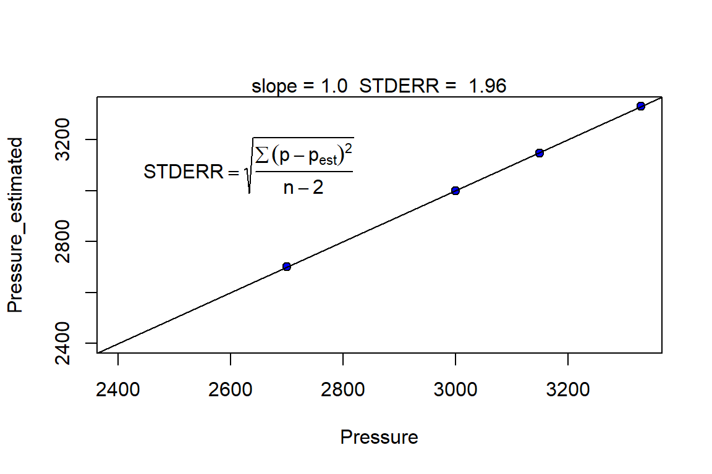
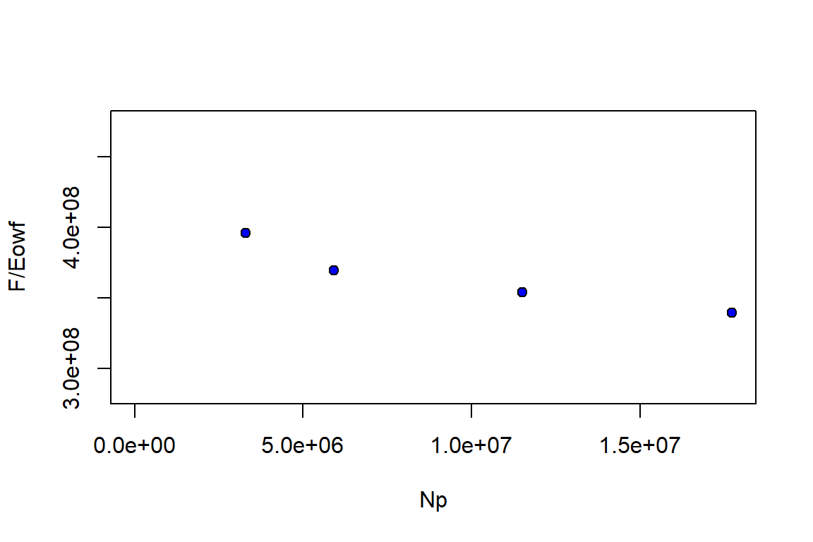
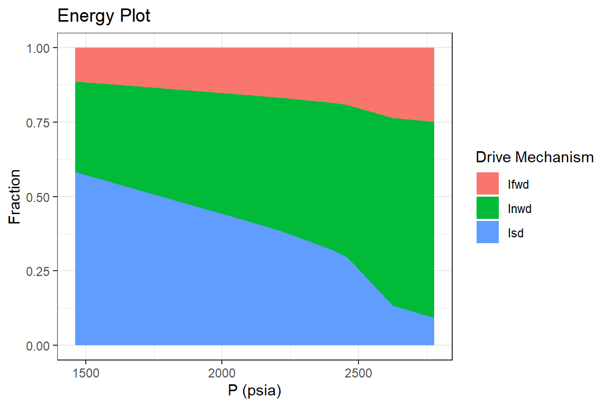
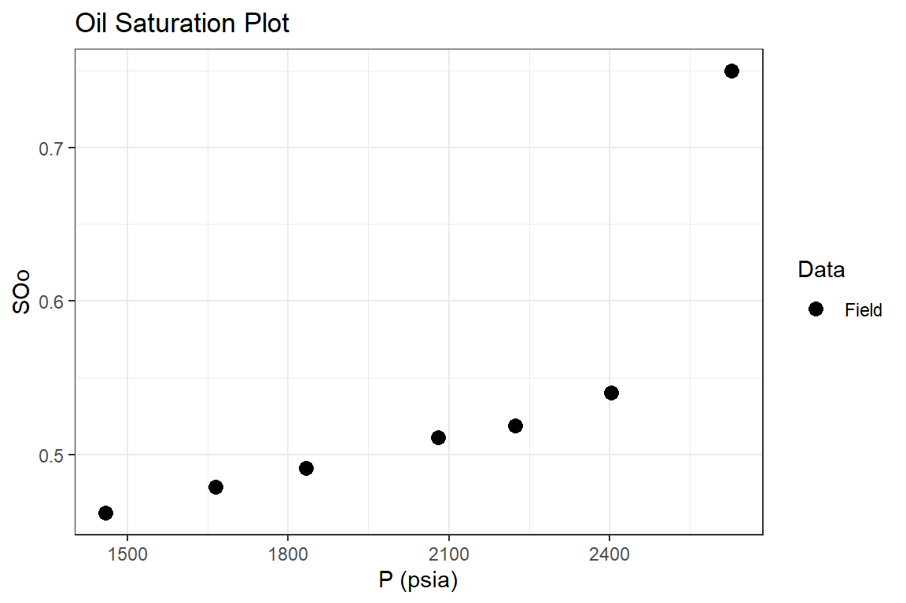
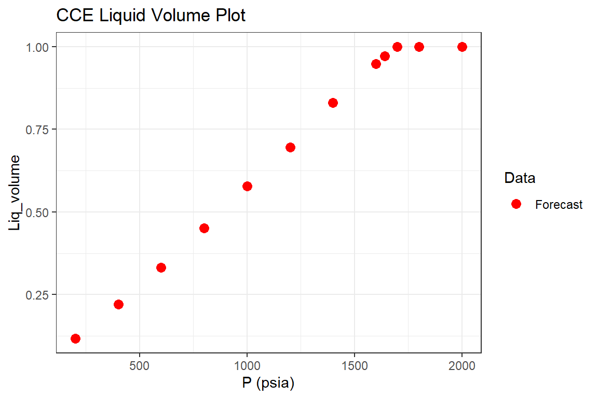

Material Balance - Black Oil Reservoirs
BlackOil.Rmd
Examples
Example 1: Undersaturated Black Oil Reservoir (Ahmed & McKinney, 2004)
Part I: History Match
library(Rmbal) library(Rrelperm) library(pracma) library(minpack.lm) library(ggplot2) library(dplyr) #> #> Attaching package: 'dplyr' #> The following objects are masked from 'package:stats': #> #> filter, lag #> The following objects are masked from 'package:base': #> #> intersect, setdiff, setequal, union library(magrittr) #> #> Attaching package: 'magrittr' #> The following objects are masked from 'package:pracma': #> #> and, mod, or pvt_table_oil <- as.data.frame(Rpvt::pvt_oil("Field", "Field", "black_oil", "Standing", "Beggs_Robinson", 200, 7150, 43, 0.7, c(0,0,0), pb = 4500, warning = "no")) colnames(pvt_table_oil) <- c("t", "p", "Rs", "Bo", "dens_o", "co", "muo", "Z", "Bg", "dens_g", "cg", "mug", "m_p") pvt_table_water <- as.data.frame(Rpvt::pvt_water("Field", "Field", "water", "Spivey", "Spivey", 200, 7150, 0, "no", "no")) colnames(pvt_table_water) <- c("t", "p", "Rsw", "Bw", "dens_w", "cw", "muw") pvt_table <- dplyr::left_join(pvt_table_oil, pvt_table_water, by = c("p", "t")) pvt_table$Rv <- rep(0, length.out = nrow(pvt_table)) # zero for black oil pvt_table <- pvt_table %>% dplyr::select(p, Bo, Rs, Rv, Bg, Bw, muo, mug, muw) p <- c(7150,6600,5800,4950,4500) We <- rep(0, length.out = length(p)) Np <- c(0, 8.072, 22.549, 36.369, 43.473) * 1e6 Rp <- c(0, rep(pvt_table$Rs[nrow(pvt_table)], 4)) Wp <- rep(0, length.out = length(p)) Wi <- rep(0, length.out = length(p)) Gi <- rep(0, length.out = length(p)) wf <- rep(1,length(p)) mbal_optim_oil_lst <- mbal_optim_param_oil(input_unit = "Field", output_unit = "Field", unknown_param = "N", aquifer_model = NULL, m = 0, phi = 0.2, swi = 0.43, Np = Np, Rp = Rp, Wp = Wp, Gi = Gi, Wi = Wi, We = We, pb = 4500, p = p, pvt = pvt_table, cf = 4e-6, wf = wf, sorg = 0, sorw = 0) time_lst <- mbal_time(1:5, "year") # a number of plots will be automatically generated for quality check optim_results <- mbal_optim_oil(mbal_optim_oil_lst, time_lst)
glimpse(optim_results) #> List of 18 #> $ input_unit : chr "Field" #> $ output_unit: chr "Field" #> $ N : num 6.35e+08 #> $ m : num 0 #> $ phi : num 0.2 #> $ swi : num 0.43 #> $ pb : num 4500 #> $ p : num [1:5] 7150 6600 5800 4950 4500 #> $ cf : num [1:5] 4e-06 4e-06 4e-06 4e-06 4e-06 #> $ pvt :'data.frame': 716 obs. of 9 variables: #> ..$ p : num [1:716] 0 10 20 30 40 50 60 70 80 90 ... #> ..$ Bo : num [1:716] 1.07 1.07 1.07 1.07 1.07 ... #> ..$ Rs : num [1:716] 4.87 6.37 7.93 9.54 11.2 ... #> ..$ Rv : num [1:716] 0 0 0 0 0 0 0 0 0 0 ... #> ..$ Bg : num [1:716] 0.2257 0.1342 0.0954 0.074 0.0604 ... #> ..$ Bw : num [1:716] 1.04 1.04 1.04 1.04 1.04 ... #> ..$ muo: num [1:716] 1 0.993 0.985 0.978 0.97 ... #> ..$ mug: num [1:716] 0.0127 0.0127 0.0127 0.0127 0.0127 ... #> ..$ muw: num [1:716] 0.302 0.302 0.302 0.302 0.302 ... #> $ prod :'data.frame': 5 obs. of 3 variables: #> ..$ Np: num [1:5] 0 8072000 22549000 36369000 43473000 #> ..$ Rp: num [1:5] 1450 1450 1450 1450 1450 #> ..$ Wp: num [1:5] 0 0 0 0 0 #> $ inj :'data.frame': 5 obs. of 2 variables: #> ..$ Gi: num [1:5] 0 0 0 0 0 #> ..$ Wi: num [1:5] 0 0 0 0 0 #> $ We : num [1:5] 0 0 0 0 0 #> $ aquifer :List of 3 #> ..$ input_unit : chr "Field" #> ..$ output_unit: chr "Field" #> ..$ We : num [1:5] 0 0 0 0 0 #> ..- attr(*, "class")= chr [1:2] "NoA" "aquifer" #> $ wf : num [1:5] 1 1 1 1 1 #> $ sorw : num 0 #> $ sorg : num 0 #> $ p_est : num [1:5] 7150 6627 5723 4924 4545 #> - attr(*, "class")= chr [1:2] "volumetric_oil" "mbal_oil"
Part II: Reservoir Performance
mbal_results <- mbal_perform_oil(optim_results, time_lst) mbal_results #> P (psia) Eo (bbl/STB) Eg (bbl/SCF) Ew (bbl/STB) Ef (bbl/bbl) Eowf (bbl/STB) #> 1 7150 0.00000000 0.000000e+00 0.000000000 0.0000 0.00000000 #> 2 6600 0.01458555 2.021415e-05 0.001602328 0.0022 0.02332055 #> 3 5800 0.03775399 5.761629e-05 0.003966834 0.0054 0.05923794 #> 4 4950 0.06642728 1.135771e-04 0.006524389 0.0088 0.10151519 #> 5 4500 0.08438586 1.539536e-04 0.007897814 0.0106 0.12670085 #> Egwf (bbl/SCF) Et (bbl) F (bbl) We Igd Isd Inwd Ifwd Iawd Itot #> 1 0.000000e+00 0 0 0 NA NA NA NA NA NA #> 2 2.301691e-05 14807612 14077898 0 0 0.6254379 0 0.3745621 0 1 #> 3 6.450975e-05 37613713 39848802 0 0 0.6373278 0 0.3626722 0 1 #> 4 1.248356e-04 64458071 65314454 0 0 0.6543580 0 0.3456420 0 1 #> 5 1.675310e-04 80449954 78853117 0 0 0.6660244 0 0.3339756 0 1 #> RF_oil RF_gas SOo SGo SWo SOT SGT SWT qo (STB/day) #> 1 0.00000000 0.00000000 0.57 0 0.43 0.57 -5.551115e-17 0.43 0.00 #> 2 0.01337156 0.01337156 0.57 0 0.43 0.57 -5.551115e-17 0.43 22115.07 #> 3 0.03352061 0.03352061 0.57 0 0.43 0.57 -5.551115e-17 0.43 39663.01 #> 4 0.05652663 0.05652663 0.57 0 0.43 0.57 -5.551115e-17 0.43 37863.01 #> 5 0.06985223 0.06985223 0.57 0 0.43 0.57 -5.551115e-17 0.43 19463.01 #> qg (SCF/day) qw (STB/day) fg fw GOR (SCF/STB) krg/kro #> 1 0 0 0 0 1449.989 0 #> 2 32066603 0 0 0 1449.989 0 #> 3 57510928 0 0 0 1449.989 0 #> 4 54900948 0 0 0 1449.989 0 #> 5 28221153 0 0 0 1449.989 0
Part III: Reservoir Forecast
# gas saturation above the bubble point is zero, however the mbal_forecast_param_oil() # requires a table of relative permeabilities as an input for the gas-oil system. # Therefore, an arbitrary table is generated using the 'Rrelperm' package. # The generated table does not impact the predictions above the bubble point. rel_perm <- as.data.frame(Rrelperm::kr2p_gl(SWCON = 0.43, SOIRG = 0.15, SORG = 0.15, SGCON = 0.05, SGCRIT = 0.05, KRGCL = 1, KROGCG = 1, NG = 1.5, NOG = 1.0, NP = 101)) colnames(rel_perm) <- c("Sg", "Sl", "Krg", "Krog") forecast_lst <- mbal_forecast_param_oil(input_unit = "Field", output_unit = "Field", N = 6.35e8, m = 0, phi = 0.1, swi = 0.43, Gi = Gi, pb = 4500, p = p, pvt = pvt_table, cf = 4e-6, wf = wf, sorg = 0, rel_perm = rel_perm) glimpse(forecast_lst) #> List of 14 #> $ input_unit : chr "Field" #> $ output_unit: chr "Field" #> $ N : num 6.35e+08 #> $ m : num 0 #> $ phi : num 0.1 #> $ swi : num 0.43 #> $ pb : num 4500 #> $ p : num [1:5] 7150 6600 5800 4950 4500 #> $ cf : num [1:5] 4e-06 4e-06 4e-06 4e-06 4e-06 #> $ pvt :'data.frame': 716 obs. of 9 variables: #> ..$ p : num [1:716] 0 10 20 30 40 50 60 70 80 90 ... #> ..$ Bo : num [1:716] 1.07 1.07 1.07 1.07 1.07 ... #> ..$ Rs : num [1:716] 4.87 6.37 7.93 9.54 11.2 ... #> ..$ Rv : num [1:716] 0 0 0 0 0 0 0 0 0 0 ... #> ..$ Bg : num [1:716] 0.2257 0.1342 0.0954 0.074 0.0604 ... #> ..$ Bw : num [1:716] 1.04 1.04 1.04 1.04 1.04 ... #> ..$ muo: num [1:716] 1 0.993 0.985 0.978 0.97 ... #> ..$ mug: num [1:716] 0.0127 0.0127 0.0127 0.0127 0.0127 ... #> ..$ muw: num [1:716] 0.302 0.302 0.302 0.302 0.302 ... #> $ inj :'data.frame': 5 obs. of 1 variable: #> ..$ Gi: num [1:5] 0 0 0 0 0 #> $ wf : num [1:5] 1 1 1 1 1 #> $ sorg : num 0 #> $ rel_perm :'data.frame': 101 obs. of 4 variables: #> ..$ Sg : num [1:101] 0 0.01 0.02 0.03 0.04 0.05 0.06 0.07 0.08 0.09 ... #> ..$ Sl : num [1:101] 1 0.99 0.98 0.97 0.96 0.95 0.94 0.93 0.92 0.91 ... #> ..$ Krg : num [1:101] 0 0 0 0 0 ... #> ..$ Krog: num [1:101] 1 1 1 1 1 ... #> - attr(*, "class")= chr [1:2] "volumetric_forecast_oil" "forecast_oil" forecast_results <- mbal_forecast_oil(forecast_lst, time_lst) forecast_results #> P (psia) SOo SGo SWo SOT SGT SWT GOR (SCF/STB) RF_oil #> 1 7150 0.57 0 0.43 0.57 -5.551115e-17 0.43 1449.989 0.00000000 #> 2 6600 0.57 0 0.43 0.57 -5.551115e-17 0.43 1449.989 0.01337156 #> 3 5800 0.57 0 0.43 0.57 -5.551115e-17 0.43 1449.989 0.03352061 #> 4 4950 0.57 0 0.43 0.57 -5.551115e-17 0.43 1449.989 0.05652663 #> 5 4500 0.57 0 0.43 0.57 -5.551115e-17 0.43 1449.989 0.06985223 #> RF_gas Liq_volume Igd Isd Inwd Ifwd Iawd Itot #> 1 0.00000000 1 NA NA NA NA NA NA #> 2 0.01337156 1 0 0.6254379 0 0.3745621 0 1 #> 3 0.03352061 1 0 0.6373278 0 0.3626722 0 1 #> 4 0.05652663 1 0 0.6543580 0 0.3456420 0 1 #> 5 0.06985223 1 0 0.6660244 0 0.3339756 0 1 p1 <- forecast_results %>% ggplot(aes(`P (psia)`, `RF_oil`, color = "Forecast")) + geom_point(size = 3) + geom_point(data = mbal_results, aes(`P (psia)`, `RF_oil`, color = "Field"))+ scale_color_manual(name="Data", values=c("Forecast" = "red", "Field" = "black")) + ggtitle("Oil Recovery Plot") + theme_bw() p1
Example 2: Undersaturated Black Oil Reservoir (Ahmed & McKinney, 2004)
Part I: History Match
library(Rmbal) library(Rrelperm) library(pracma) library(ggplot2) library(dplyr) library(magrittr) pvt_table_oil <- as.data.frame(Rpvt::pvt_oil("Field", "Field", "black_oil", "Standing", "Beggs_Robinson", 200, 7150, 43, 0.7, c(0,0,0), pb = 4500, warning = "no")) colnames(pvt_table_oil) <- c("t", "p", "Rs", "Bo", "dens_o", "co", "muo", "Z", "Bg", "dens_g", "cg", "mug", "m_p") pvt_table_water <- as.data.frame(Rpvt::pvt_water("Field", "Field", "water", "Spivey", "Spivey", 200, 7150, 3e-6, "no", "no")) colnames(pvt_table_water) <- c("t", "p", "Rsw", "Bw", "dens_w", "cw", "muw") pvt_table <- dplyr::left_join(pvt_table_oil, pvt_table_water, by = c("p", "t")) pvt_table$Rv <- 0.0 # zero for black oil pvt_table <- pvt_table %>% dplyr::select(p, Bo, Rs, Rv, Bg, Bw, muo, mug, muw) p <- c(7150, 6600, 5800, 4950, 4500, 4350, 4060, 3840, 3600, 3480, 3260, 3100, 2940, 2800) We <- rep(0, length.out = length(p)) Np <- c(0, 8.072, 22.549, 36.369, 43.473, 49.182, 58.383, 64.812, 69.562, 74.572, 78.4, 81.275, 83.879, 86.401) * 1e6 Rp <- c(0, rep(pvt_table$Rs[nrow(pvt_table)], 4), 1576, 1788, 1992, 2158, 2383, 2596, 2785, 2953, 3103) Wp <- rep(0, length.out = length(p)) Wi <- rep(0, length.out = length(p)) Gi <- rep(0, length.out = length(p)) wf <- rep(1,length(p)) mbal_optim_oil_lst <- mbal_optim_param_oil(input_unit = "Field", output_unit = "Field", unknown_param = "N", aquifer_model = NULL, m = 0, phi = 0.2, swi = 0.43, Np = Np, Rp = Rp, Wp = Wp, Gi = Gi, Wi = Wi, We = We, pb = 4500, p = p, pvt = pvt_table, cf = 4e-6, wf = wf, sorg = 0, sorw = 0) glimpse(mbal_optim_oil_lst) #> List of 17 #> $ input_unit : chr "Field" #> $ output_unit: chr "Field" #> $ N : NULL #> $ m : num 0 #> $ phi : num 0.2 #> $ swi : num 0.43 #> $ pb : num 4500 #> $ p : num [1:14] 7150 6600 5800 4950 4500 4350 4060 3840 3600 3480 ... #> $ cf : num [1:14] 4e-06 4e-06 4e-06 4e-06 4e-06 4e-06 4e-06 4e-06 4e-06 4e-06 ... #> $ pvt :'data.frame': 716 obs. of 9 variables: #> ..$ p : num [1:716] 0 10 20 30 40 50 60 70 80 90 ... #> ..$ Bo : num [1:716] 1.07 1.07 1.07 1.07 1.07 ... #> ..$ Rs : num [1:716] 4.87 6.37 7.93 9.54 11.2 ... #> ..$ Rv : num [1:716] 0 0 0 0 0 0 0 0 0 0 ... #> ..$ Bg : num [1:716] 0.2257 0.1342 0.0954 0.074 0.0604 ... #> ..$ Bw : num [1:716] 1.04 1.04 1.04 1.04 1.04 ... #> ..$ muo: num [1:716] 1 0.993 0.985 0.978 0.97 ... #> ..$ mug: num [1:716] 0.0127 0.0127 0.0127 0.0127 0.0127 ... #> ..$ muw: num [1:716] 0.302 0.302 0.302 0.302 0.302 ... #> $ prod :'data.frame': 14 obs. of 3 variables: #> ..$ Np: num [1:14] 0 8072000 22549000 36369000 43473000 ... #> ..$ Rp: num [1:14] 1450 1450 1450 1450 1450 ... #> ..$ Wp: num [1:14] 0 0 0 0 0 0 0 0 0 0 ... #> $ inj :'data.frame': 14 obs. of 2 variables: #> ..$ Gi: num [1:14] 0 0 0 0 0 0 0 0 0 0 ... #> ..$ Wi: num [1:14] 0 0 0 0 0 0 0 0 0 0 ... #> $ We : num [1:14] 0 0 0 0 0 0 0 0 0 0 ... #> $ aquifer :List of 3 #> ..$ input_unit : chr "Field" #> ..$ output_unit: chr "Field" #> ..$ We : num [1:14] 0 0 0 0 0 0 0 0 0 0 ... #> ..- attr(*, "class")= chr [1:2] "NoA" "aquifer" #> $ wf : num [1:14] 1 1 1 1 1 1 1 1 1 1 ... #> $ sorg : num 0 #> $ sorw : num 0 #> - attr(*, "class")= chr [1:2] "volumetric_optim_oil" "optimization_oil" time_lst <- mbal_time(1:14, "year") # a number of plots will be automatically generated for quality check optim_results <- mbal_optim_oil(mbal_optim_oil_lst, time_lst)
glimpse(optim_results) #> List of 18 #> $ input_unit : chr "Field" #> $ output_unit: chr "Field" #> $ N : num 7.56e+08 #> $ m : num 0 #> $ phi : num 0.2 #> $ swi : num 0.43 #> $ pb : num 4500 #> $ p : num [1:14] 7150 6600 5800 4950 4500 4350 4060 3840 3600 3480 ... #> $ cf : num [1:14] 4e-06 4e-06 4e-06 4e-06 4e-06 4e-06 4e-06 4e-06 4e-06 4e-06 ... #> $ pvt :'data.frame': 716 obs. of 9 variables: #> ..$ p : num [1:716] 0 10 20 30 40 50 60 70 80 90 ... #> ..$ Bo : num [1:716] 1.07 1.07 1.07 1.07 1.07 ... #> ..$ Rs : num [1:716] 4.87 6.37 7.93 9.54 11.2 ... #> ..$ Rv : num [1:716] 0 0 0 0 0 0 0 0 0 0 ... #> ..$ Bg : num [1:716] 0.2257 0.1342 0.0954 0.074 0.0604 ... #> ..$ Bw : num [1:716] 1.04 1.04 1.04 1.04 1.04 ... #> ..$ muo: num [1:716] 1 0.993 0.985 0.978 0.97 ... #> ..$ mug: num [1:716] 0.0127 0.0127 0.0127 0.0127 0.0127 ... #> ..$ muw: num [1:716] 0.302 0.302 0.302 0.302 0.302 ... #> $ prod :'data.frame': 14 obs. of 3 variables: #> ..$ Np: num [1:14] 0 8072000 22549000 36369000 43473000 ... #> ..$ Rp: num [1:14] 1450 1450 1450 1450 1450 ... #> ..$ Wp: num [1:14] 0 0 0 0 0 0 0 0 0 0 ... #> $ inj :'data.frame': 14 obs. of 2 variables: #> ..$ Gi: num [1:14] 0 0 0 0 0 0 0 0 0 0 ... #> ..$ Wi: num [1:14] 0 0 0 0 0 0 0 0 0 0 ... #> $ We : num [1:14] 0 0 0 0 0 0 0 0 0 0 ... #> $ aquifer :List of 3 #> ..$ input_unit : chr "Field" #> ..$ output_unit: chr "Field" #> ..$ We : num [1:14] 0 0 0 0 0 0 0 0 0 0 ... #> ..- attr(*, "class")= chr [1:2] "NoA" "aquifer" #> $ wf : num [1:14] 1 1 1 1 1 1 1 1 1 1 ... #> $ sorw : num 0 #> $ sorg : num 0 #> $ p_est : num [1:14] 7150 6710 5944 5252 4916 ... #> - attr(*, "class")= chr [1:2] "volumetric_oil" "mbal_oil"
Part II: Reservoir Performance
mbal_results <- mbal_perform_oil(optim_results, time_lst) mbal_results #> P (psia) Eo (bbl/STB) Eg (bbl/SCF) Ew (bbl/STB) Ef (bbl/bbl) Eowf (bbl/STB) #> 1 7150 0.00000000 0.000000e+00 0.000000000 0.00000 0.00000000 #> 2 6600 0.01458555 2.021415e-05 0.001602328 0.00220 0.02332055 #> 3 5800 0.03775399 5.761629e-05 0.003966834 0.00540 0.05923794 #> 4 4950 0.06642728 1.135771e-04 0.006524389 0.00880 0.10151519 #> 5 4500 0.08438586 1.539536e-04 0.007897815 0.01060 0.12670085 #> 6 4350 0.09253750 1.697488e-04 0.008358672 0.01120 0.13726543 #> 7 4060 0.11460682 2.044881e-04 0.009254036 0.01236 0.16400540 #> 8 3840 0.13793039 2.353071e-04 0.009937161 0.01324 0.19087721 #> 9 3600 0.17134421 2.744243e-04 0.010686248 0.01420 0.22816680 #> 10 3480 0.19175249 2.965592e-04 0.011062315 0.01468 0.25051492 #> 11 3260 0.23686709 3.425341e-04 0.011754428 0.01556 0.29918932 #> 12 3100 0.27708164 3.811749e-04 0.012259960 0.01620 0.34199561 #> 13 2940 0.32482944 4.251195e-04 0.012767337 0.01684 0.39233753 #> 14 2800 0.37393276 4.687258e-04 0.013212818 0.01740 0.44371265 #> Egwf (bbl/SCF) Et (bbl) F (bbl) We Igd Isd Inwd Ifwd Iawd Itot #> 1 0.000000e+00 0 0 0 NA NA NA NA NA NA #> 2 2.301691e-05 17632836 14077898 0 0 0.6254379 0 0.3745621 0 1 #> 3 6.450975e-05 44790236 39848802 0 0 0.6373278 0 0.3626722 0 1 #> 4 1.248356e-04 76756374 65314454 0 0 0.6543580 0 0.3456420 0 1 #> 5 1.675310e-04 95799434 78853117 0 0 0.6660244 0 0.3339756 0 1 #> 6 1.841005e-04 103787389 94100389 0 0 0.6741501 0 0.3258499 0 1 #> 7 2.203384e-04 124005672 122648176 0 0 0.6987991 0 0.3012009 0 1 #> 8 2.522960e-04 144323642 148788859 0 0 0.7226132 0 0.2773868 0 1 #> 9 2.926567e-04 172518572 173069325 0 0 0.7509603 0 0.2490397 0 1 #> 10 3.154141e-04 189416148 202511466 0 0 0.7654334 0 0.2345666 0 1 #> 11 3.625311e-04 226219215 234793745 0 0 0.7916963 0 0.2083037 0 1 #> 12 4.020036e-04 258585364 264650747 0 0 0.8101906 0 0.1898094 0 1 #> 13 4.467805e-04 296649251 295866353 0 0 0.8279337 0 0.1720663 0 1 #> 14 4.911157e-04 335494356 327934206 0 0 0.8427363 0 0.1572637 0 1 #> RF_oil RF_gas SOo SGo SWo SOT SGT SWT #> 1 0.00000000 0.00000000 0.5700000 0.00000000 0.43 0.5700000 -5.551115e-17 0.43 #> 2 0.01337156 0.01337156 0.5700000 0.00000000 0.43 0.5700000 -5.551115e-17 0.43 #> 3 0.03352061 0.03352061 0.5700000 0.00000000 0.43 0.5700000 -5.551115e-17 0.43 #> 4 0.05652663 0.05652663 0.5700000 0.00000000 0.43 0.5700000 -5.551115e-17 0.43 #> 5 0.06985223 0.06985223 0.5700000 0.00000000 0.43 0.5700000 -5.551115e-17 0.43 #> 6 0.07174241 0.07797717 0.5485941 0.02140590 0.43 0.5485941 2.140590e-02 0.43 #> 7 0.07806987 0.09626897 0.5221388 0.04786120 0.43 0.5221388 4.786120e-02 0.43 #> 8 0.08314556 0.11422568 0.5031687 0.06683135 0.43 0.5031687 6.683135e-02 0.43 #> 9 0.09170741 0.13648697 0.4847327 0.08526726 0.43 0.4847327 8.526726e-02 0.43 #> 10 0.09224860 0.15160696 0.4739048 0.09609520 0.43 0.4739048 9.609520e-02 0.43 #> 11 0.09990233 0.17886100 0.4582064 0.11179363 0.43 0.4582064 1.117936e-01 0.43 #> 12 0.10502783 0.20172741 0.4470325 0.12296749 0.43 0.4470325 1.229675e-01 0.43 #> 13 0.11122887 0.22652508 0.4362948 0.13370515 0.43 0.4362948 1.337052e-01 0.43 #> 14 0.11690521 0.25017907 0.4269536 0.14304640 0.43 0.4269536 1.430464e-01 0.43 #> qo (STB/day) qg (SCF/day) qw (STB/day) fg fw GOR (SCF/STB) krg/kro #> 1 0.000 0 0 0.0000000 0 1449.989 0.00000000 #> 2 22115.068 32066603 0 0.0000000 0 1449.989 0.00000000 #> 3 39663.014 57510928 0 0.0000000 0 1449.989 0.00000000 #> 4 37863.014 54900948 0 0.0000000 0 1449.989 0.00000000 #> 5 19463.014 28221153 0 0.0000000 0 1449.989 0.00000000 #> 6 15641.096 39658811 0 0.3915718 0 2535.552 0.03720636 #> 7 25208.219 73638279 0 0.4962545 0 2921.201 0.05384999 #> 8 17613.699 67716986 0 0.6162464 0 3844.564 0.08766729 #> 9 13013.699 57559704 0 0.6984738 0 4423.009 0.11107716 #> 10 13726.027 75589808 0 0.7294254 0 5507.042 0.14993374 #> 11 10487.671 70743353 0 0.8088469 0 6745.382 0.19733650 #> 12 7876.712 62532808 0 0.8407946 0 7938.948 0.24331382 #> 13 7134.247 58476197 0 0.8568752 0 8196.548 0.25807072 #> 14 6909.589 55911277 0 0.8617173 0 8091.838 0.26003598
Part III: Reservoir Forecast
# Step I: generating a set of pseudo relative permeability curves by minimizing # the difference between field and theoretical 'fg' values # 'swcrit' and 'sgcrit' values are estimated from the 'mbal_results' data frame fun_fg <- function(x, swcrit, sgcrit, muo, mug, sg, fg, krg_kro) { Kr_table <- Rrelperm::kr2p_gl(SWCON = swcrit, SOIRG = x[1], SORG = x[1], SGCON = sgcrit, SGCRIT = sgcrit, KRGCL = x[2], KROGCG = x[3], NG = x[4], NOG = x[5], NP = 101) l <- length(fg) krg_est_sub <- vector(length = l) kro_est_sub <- vector(length = l) krg_est_sub <- approx(x = Kr_table[,1], y = Kr_table[,3], xout = sg, rule = 2)$y kro_est_sub <- approx(x = Kr_table[,1], y = Kr_table[,4], xout = sg, rule = 2)$y fg_est <- (krg_est_sub / mug) / (krg_est_sub / mug + kro_est_sub / muo) krg_kro_est <- krg_est_sub / kro_est_sub error <- (fg - fg_est) ^ 2 + (krg_kro - krg_kro_est) ^ 2 return(error) } swcrit <- 0.44 sgcrit <- 0.015 p <- mbal_results$`P (psia)` sg <- mbal_results$SGo # gas saturation in the oil leg fg <- mbal_results$fg # in-situ gas fractional flow krg_kro <- mbal_results$`krg/kro` muo <- approx(x = pvt_table$p, y = pvt_table$muo, xout = p, rule = 2)$y mug <- approx(x = pvt_table$p, y = pvt_table$mug, xout = p, rule = 2)$y par <- c(0.1, 1, 1, 2, 2) lower = c(0, 0.1, 0.1, 0.1, 0.1) upper = c(1 - swcrit - sgcrit, 1.0, 1.0, 10.0, 10.0) opt_results <- minpack.lm::nls.lm(par = par, fn = fun_fg, swcrit = swcrit, sgcrit = sgcrit, muo = muo, mug = mug, sg = sg, fg = fg, krg_kro = krg_kro, lower = lower, upper = upper) opt_results #> Nonlinear regression via the Levenberg-Marquardt algorithm #> parameter estimates: 0, 1, 1, 0.805733179825336, 0.1 #> residual sum-of-squares: 0.0006949 #> reason terminated: Relative error between `par' and the solution is at most `ptol'. sol <- opt_results$par sol #> [1] 0.0000000 1.0000000 1.0000000 0.8057332 0.1000000 rel_perm <- as.data.frame(Rrelperm::kr2p_gl(SWCON = swcrit, SOIRG = sol[1], SORG = sol[1], SGCON = sgcrit, SGCRIT = sgcrit, KRGCL = sol[2], KROGCG = sol[3], NG = sol[4], NOG = sol[5], NP = 101)) colnames(rel_perm) <- c("Sg", "Sl", "Krg", "Krog") krg_est <- approx(x = rel_perm[,1], y = rel_perm[,3], xout = sg, rule = 2)$y kro_est <- approx(x = rel_perm[,1], y = rel_perm[,4], xout = sg, rule = 2)$y fg_est <- (krg_est/ mug) / (krg_est / mug + kro_est / muo) fg_df <- data.frame(Sg = sg) fg_df$fg <- fg_est p_fg <- fg_df %>% ggplot(aes(sg, fg, color = "Model")) + geom_point(size = 3) + geom_point(data = mbal_results, aes(SGo, fg, color = "Field"), size = 3)+ xlim(c(0,1)) + ylim(c(0,1)) + scale_color_manual(name="Data", values=c("Model" = "red", "Field" = "black")) + ggtitle("Gas Frational Flow Plot") + theme_bw() p_fg
p_forecast <- c(p, 2600, 2400, 2200, 2000, 1800, 1600, 1400, 1200) Gi_forecast <- c(Gi, 0, 0, 0, 0, 0, 0, 0, 0) wf_forecast <- c(wf, 1, 1, 1, 1, 1, 1, 1, 1) time_lst_forecast <- mbal_time(1:22, "year") forecast_lst <- mbal_forecast_param_oil(input_unit = "Field", output_unit = "Field", N = 6.35e8, m = 0, phi = 0.1, swi = 0.43, Gi = Gi_forecast, pb = 4500, p = p_forecast, pvt = pvt_table, cf = 4e-6, wf = wf_forecast, sorg = 0, rel_perm = rel_perm) glimpse(forecast_lst) #> List of 14 #> $ input_unit : chr "Field" #> $ output_unit: chr "Field" #> $ N : num 6.35e+08 #> $ m : num 0 #> $ phi : num 0.1 #> $ swi : num 0.43 #> $ pb : num 4500 #> $ p : num [1:22] 7150 6600 5800 4950 4500 4350 4060 3840 3600 3480 ... #> $ cf : num [1:22] 4e-06 4e-06 4e-06 4e-06 4e-06 4e-06 4e-06 4e-06 4e-06 4e-06 ... #> $ pvt :'data.frame': 716 obs. of 9 variables: #> ..$ p : num [1:716] 0 10 20 30 40 50 60 70 80 90 ... #> ..$ Bo : num [1:716] 1.07 1.07 1.07 1.07 1.07 ... #> ..$ Rs : num [1:716] 4.87 6.37 7.93 9.54 11.2 ... #> ..$ Rv : num [1:716] 0 0 0 0 0 0 0 0 0 0 ... #> ..$ Bg : num [1:716] 0.2257 0.1342 0.0954 0.074 0.0604 ... #> ..$ Bw : num [1:716] 1.04 1.04 1.04 1.04 1.04 ... #> ..$ muo: num [1:716] 1 0.993 0.985 0.978 0.97 ... #> ..$ mug: num [1:716] 0.0127 0.0127 0.0127 0.0127 0.0127 ... #> ..$ muw: num [1:716] 0.302 0.302 0.302 0.302 0.302 ... #> $ inj :'data.frame': 22 obs. of 1 variable: #> ..$ Gi: num [1:22] 0 0 0 0 0 0 0 0 0 0 ... #> $ wf : num [1:22] 1 1 1 1 1 1 1 1 1 1 ... #> $ sorg : num 0 #> $ rel_perm :'data.frame': 101 obs. of 4 variables: #> ..$ Sg : num [1:101] 0 0.01 0.02 0.03 0.04 0.05 0.06 0.07 0.08 0.09 ... #> ..$ Sl : num [1:101] 1 0.99 0.98 0.97 0.96 0.95 0.94 0.93 0.92 0.91 ... #> ..$ Krg : num [1:101] 0 0 0.0228 0.0553 0.0835 ... #> ..$ Krog: num [1:101] 1 1 0.999 0.997 0.995 ... #> - attr(*, "class")= chr [1:2] "volumetric_forecast_oil" "forecast_oil" forecast_results <- mbal_forecast_oil(forecast_lst, time_lst_forecast) forecast_results #> P (psia) SOo SGo SWo SOT SGT SWT #> 1 7150 0.5700000 0.00000000 0.43 0.5700000 -5.551115e-17 0.43 #> 2 6600 0.5700000 0.00000000 0.43 0.5700000 -5.551115e-17 0.43 #> 3 5800 0.5700000 0.00000000 0.43 0.5700000 -5.551115e-17 0.43 #> 4 4950 0.5700000 0.00000000 0.43 0.5700000 -5.551115e-17 0.43 #> 5 4500 0.5700000 0.00000000 0.43 0.5700000 -5.551115e-17 0.43 #> 6 4350 0.5432257 0.02677428 0.43 0.5432257 2.677428e-02 0.43 #> 7 4060 0.5198733 0.05012674 0.43 0.5198733 5.012674e-02 0.43 #> 8 3840 0.5028741 0.06712593 0.43 0.5028741 6.712593e-02 0.43 #> 9 3600 0.4848529 0.08514707 0.43 0.4848529 8.514707e-02 0.43 #> 10 3480 0.4760302 0.09396976 0.43 0.4760302 9.396976e-02 0.43 #> 11 3260 0.4601576 0.10984240 0.43 0.4601576 1.098424e-01 0.43 #> 12 3100 0.4488558 0.12114422 0.43 0.4488558 1.211442e-01 0.43 #> 13 2940 0.4377526 0.13224743 0.43 0.4377526 1.322474e-01 0.43 #> 14 2800 0.4281989 0.14180107 0.43 0.4281989 1.418011e-01 0.43 #> 15 2600 0.4148094 0.15519059 0.43 0.4148094 1.551906e-01 0.43 #> 16 2400 0.4017250 0.16827499 0.43 0.4017250 1.682750e-01 0.43 #> 17 2200 0.3889460 0.18105395 0.43 0.3889460 1.810540e-01 0.43 #> 18 2000 0.3764732 0.19352677 0.43 0.3764732 1.935268e-01 0.43 #> 19 1800 0.3643071 0.20569292 0.43 0.3643071 2.056929e-01 0.43 #> 20 1600 0.3524466 0.21755341 0.43 0.3524466 2.175534e-01 0.43 #> 21 1400 0.3408869 0.22911308 0.43 0.3408869 2.291131e-01 0.43 #> 22 1200 0.3296154 0.24038459 0.43 0.3296154 2.403846e-01 0.43 #> GOR (SCF/STB) RF_oil RF_gas Liq_volume Igd Isd Inwd Ifwd #> 1 1449.989 0.00000000 0.00000000 1.0000000 NA NA NA NA #> 2 1449.989 0.01337156 0.01337156 1.0000000 0 0.6254379 0 0.37456213 #> 3 1449.989 0.03352061 0.03352061 1.0000000 0 0.6373278 0 0.36267220 #> 4 1449.989 0.05652663 0.05652663 1.0000000 0 0.6543580 0 0.34564203 #> 5 1449.989 0.06985223 0.06985223 1.0000000 0 0.6660244 0 0.33397557 #> 6 2772.826 0.07419549 0.07617669 0.9771222 0 0.6741501 0 0.32584994 #> 7 4645.716 0.08121915 0.09414418 0.9309889 0 0.6987991 0 0.30120093 #> 8 5795.180 0.08625326 0.11226867 0.8941984 0 0.7226132 0 0.27738681 #> 9 6903.398 0.09177503 0.13644770 0.8521475 0 0.7509603 0 0.24903969 #> 10 7408.564 0.09458359 0.15030850 0.8303216 0 0.7654334 0 0.23456660 #> 11 8256.700 0.09987213 0.17887643 0.7888277 0 0.7916963 0 0.20830366 #> 12 8807.561 0.10385118 0.20229020 0.7573803 0 0.8101906 0 0.18980936 #> 13 9302.492 0.10796484 0.22797957 0.7248040 0 0.8279337 0 0.17206634 #> 14 9687.291 0.11168735 0.25235550 0.6953362 0 0.8427363 0 0.15726370 #> 15 10151.341 0.11723108 0.29027999 0.6516276 0 0.8626041 0 0.13739589 #> 16 10506.016 0.12306683 0.33184968 0.6059898 0 0.8809038 0 0.11909615 #> 17 10737.990 0.12922887 0.37699011 0.5584429 0 0.8976251 0 0.10237487 #> 18 10834.037 0.13575496 0.42553572 0.5090931 0 0.9128009 0 0.08719912 #> 19 10782.211 0.14268843 0.47721736 0.4581546 0 0.9264925 0 0.07350751 #> 20 10570.656 0.15008228 0.53165910 0.4059629 0 0.9387813 0 0.06121874 #> 21 10188.658 0.15800687 0.58838679 0.3529695 0 0.9497635 0 0.05023645 #> 22 9625.463 0.16656300 0.64684659 0.2997166 0 0.9595472 0 0.04045282 #> Iawd Itot #> 1 NA NA #> 2 0 1 #> 3 0 1 #> 4 0 1 #> 5 0 1 #> 6 0 1 #> 7 0 1 #> 8 0 1 #> 9 0 1 #> 10 0 1 #> 11 0 1 #> 12 0 1 #> 13 0 1 #> 14 0 1 #> 15 0 1 #> 16 0 1 #> 17 0 1 #> 18 0 1 #> 19 0 1 #> 20 0 1 #> 21 0 1 #> 22 0 1 p1 <- forecast_results %>% ggplot(aes(`P (psia)`, SOo, color = "Forecast")) + geom_point(size = 3) + geom_point(data = mbal_results, aes(`P (psia)`, SOo, color = "Field"))+ scale_color_manual(name="Data", values=c("Forecast" = "red", "Field" = "black")) + ggtitle("Oil Saturation Plot") + theme_bw() p1
p2 <- forecast_results %>% ggplot(aes(`P (psia)`, `GOR (SCF/STB)`, color = "Forecast")) + geom_point(size = 3) + geom_point(data = mbal_results, aes(`P (psia)`, `GOR (SCF/STB)`, color = "Field"))+ scale_color_manual(name="Data", values=c("Forecast" = "red", "Field" = "black")) + ggtitle("GOR Plot") + theme_bw() p2
p3 <- forecast_results %>% ggplot(aes(`P (psia)`, `RF_oil`, color = "Forecast")) + geom_point(size = 3) + geom_point(data = mbal_results, aes(`P (psia)`, `RF_oil`, color = "Field"))+ scale_color_manual(name="Data", values=c("Forecast" = "red", "Field" = "black")) + ggtitle("Oil Recovery Plot") + theme_bw() p3
p4 <- forecast_results %>% ggplot(aes(`P (psia)`, `Liq_volume`, color = "Forecast")) + geom_point(size = 3) + scale_color_manual(name="Data", values=c("Forecast" = "red")) + ggtitle("CCE Liquid Volume Plot") + theme_bw() p4
Example 3: Saturated Black Oil Reservoir with Gas Cap (Dake, 1983)
Part I: History Match
library(Rmbal) library(Rrelperm) library(pracma) library(ggplot2) library(dplyr) library(magrittr) p_pvt <- c(3330, 3150, 3000, 2850, 2700, 2550, 2400) Bo <- c(1.2511, 1.2353, 1.2222, 1.2122, 1.2022, 1.1922, 1.1822) Rs <- c(510, 477, 450, 425, 401, 375, 352) Bg <- c(0.00087, 0.00092, 0.00096, 0.00101, 0.00107, 0.00113, 0.00120) cw <- 2e-6 Bwi <- 1.0 Bw <- Bwi * exp(cw * (p_pvt[1] - p_pvt)) Rv <- rep(0, length(p_pvt)) muo <- rep(0.5, length(p_pvt)) muw <- rep(0.25, length(p_pvt)) mug <- rep(0.02, length(p_pvt)) pvt_table <- data.frame(p = p_pvt, Bo = Bo, Rs = Rs, Rv = Rv, Bg = Bg, Bw = Bw, muo = muo, mug = mug, muw = muw) p <- c(3330, 3150, 3000, 2850, 2700, 2550, 2400) We <- rep(0, length.out = length(p)) Np <- c(0, 3.295, 5.903, 8.852, 11.503, 14.513, 17.730) * 1e6 Rp <- c(0, 1050, 1060, 1160, 1235, 1265, 1300) Wp <- rep(0, length.out = length(p)) Wi <- rep(0, length.out = length(p)) Gi <- rep(0, length.out = length(p)) wf <- c(1, 1, 1, 0, 1, 0, 1) mbal_optim_oil_lst <- mbal_optim_param_oil(input_unit = "Field", output_unit = "Field", unknown_param = "N_m", aquifer_model = NULL, phi = 0.2, swi = 0.2, Np = Np, Rp = Rp, Wp = Wp, Gi = Gi, Wi = Wi, We = We, pb = 3330, p = p, pvt = pvt_table, cf = 0, wf = wf, sorg = 0.2, sorw = 0) time_lst <- mbal_time(c(0, 365, 730, 1095, 1460, 1825, 2190), "day") # a number of plots will be automatically generated for quality check optim_results <- mbal_optim_oil(mbal_optim_oil_lst, time_lst)

glimpse(optim_results) #> List of 18 #> $ input_unit : chr "Field" #> $ output_unit: chr "Field" #> $ N : num 1.37e+08 #> $ m : num 0.377 #> $ phi : num 0.2 #> $ swi : num 0.2 #> $ pb : num 3330 #> $ p : num [1:7] 3330 3150 3000 2850 2700 2550 2400 #> $ cf : num [1:7] 0 0 0 0 0 0 0 #> $ pvt :'data.frame': 7 obs. of 9 variables: #> ..$ p : num [1:7] 3330 3150 3000 2850 2700 2550 2400 #> ..$ Bo : num [1:7] 1.25 1.24 1.22 1.21 1.2 ... #> ..$ Rs : num [1:7] 510 477 450 425 401 375 352 #> ..$ Rv : num [1:7] 0 0 0 0 0 0 0 #> ..$ Bg : num [1:7] 0.00087 0.00092 0.00096 0.00101 0.00107 0.00113 0.0012 #> ..$ Bw : num [1:7] 1 1 1 1 1 ... #> ..$ muo: num [1:7] 0.5 0.5 0.5 0.5 0.5 0.5 0.5 #> ..$ mug: num [1:7] 0.02 0.02 0.02 0.02 0.02 0.02 0.02 #> ..$ muw: num [1:7] 0.25 0.25 0.25 0.25 0.25 0.25 0.25 #> $ prod :'data.frame': 7 obs. of 3 variables: #> ..$ Np: num [1:7] 0 3295000 5903000 8852000 11503000 ... #> ..$ Rp: num [1:7] 510 1050 1060 1160 1235 ... #> ..$ Wp: num [1:7] 0 0 0 0 0 0 0 #> $ inj :'data.frame': 7 obs. of 2 variables: #> ..$ Gi: num [1:7] 0 0 0 0 0 0 0 #> ..$ Wi: num [1:7] 0 0 0 0 0 0 0 #> $ We : num [1:7] 0 0 0 0 0 0 0 #> $ aquifer :List of 3 #> ..$ input_unit : chr "Field" #> ..$ output_unit: chr "Field" #> ..$ We : num [1:7] 0 0 0 0 0 0 0 #> ..- attr(*, "class")= chr [1:2] "NoA" "aquifer" #> $ wf : num [1:7] 1 1 1 0 1 0 1 #> $ sorw : num 0 #> $ sorg : num 0.2 #> $ p_est : num [1:5] 3330 3147 2999 2702 NA #> - attr(*, "class")= chr [1:2] "gas_cap_oil" "mbal_oil"
Part II: Reservoir Performance
mbal_results <- mbal_perform_oil(optim_results, time_lst) mbal_results #> P (psia) Eo (bbl/STB) Eg (bbl/SCF) Ew (bbl/STB) Ef (bbl/bbl) Eowf (bbl/STB) #> 1 3330 0.00000 0.00000 0.0000000000 0 0.00000000 #> 2 3150 0.01456 0.00005 0.0003600648 0 0.01467262 #> 3 3000 0.02870 0.00009 0.0006602178 0 0.02890650 #> 4 2700 0.06773 0.00020 0.0012607941 0 0.06812434 #> 5 2400 0.12070 0.00033 0.0018617309 0 0.12128230 #> Egwf (bbl/SCF) Et (bbl) F (bbl) We Igd Isd Inwd Ifwd Iawd #> 1 0.000000e+00 0 0 0 NA NA NA NA NA #> 2 5.007831e-05 5722033 5807306 0 0.6481408 0.3481511 0 0.003708064 0 #> 3 9.014360e-05 10641333 10671443 0 0.6273302 0.3690138 0 0.003656017 0 #> 4 2.002742e-04 24175999 24093954 0 0.6136140 0.3833129 0 0.003073100 0 #> 5 3.304049e-04 41101462 41130054 0 0.5955338 0.4017971 0 0.002669172 0 #> Itot RF_oil RF_gas SOo SGo SWo SOT SGT SWT #> 1 NA 0.00000000 0.00000000 0.8000000 0.00000000 0.2 0.5809809 0.2190191 0.2 #> 2 1 0.02372872 0.02368098 0.7833190 0.01668101 0.2 0.5598291 0.2401709 0.2 #> 3 1 0.04302183 0.04334418 0.7692774 0.03072257 0.2 0.5430738 0.2569262 0.2 #> 4 1 0.08435887 0.09902245 0.7520598 0.04794024 0.2 0.5113374 0.2886626 0.2 #> 5 1 0.12949410 0.16000344 0.7344800 0.06551996 0.2 0.4778455 0.3221545 0.2 #> qo (STB/day) qg (SCF/day) qw (STB/day) fg fw GOR (SCF/STB) krg/kro #> 1 0.000 0 0 0.0000000 0 510.000 0.00000000 #> 2 9027.397 9478767 0 0.2991047 0 1050.000 0.01706986 #> 3 7145.205 7664192 0 0.3403058 0 1072.634 0.01956239 #> 4 7671.233 10889075 0 0.4878215 0 1419.469 0.03625891 #> 5 8530.137 12113418 0 0.5404484 0 1420.073 0.04336619
Part III: Reservoir Forecast
# Step I: generating a set of pseudo relative permeability curves by minimizing # the difference between field and theoretical 'fg' values # 'swcrit' and 'sgcrit' values are estimated from the 'mbal_results' data frame fun_fg <- function(x, swcrit, sgcrit, muo, mug, sg, fg, krg_kro) { Kr_table <- Rrelperm::kr2p_gl(SWCON = swcrit, SOIRG = x[1], SORG = x[1], SGCON = sgcrit, SGCRIT = sgcrit, KRGCL = x[2], KROGCG = x[3], NG = x[4], NOG = x[5], NP = 101) l <- length(fg) krg_est_sub <- vector(length = l) kro_est_sub <- vector(length = l) krg_est_sub <- approx(x = Kr_table[,1], y = Kr_table[,3], xout = sg, rule = 2)$y kro_est_sub <- approx(x = Kr_table[,1], y = Kr_table[,4], xout = sg, rule = 2)$y fg_est <- (krg_est_sub / mug) / (krg_est_sub / mug + kro_est_sub / muo) krg_kro_est <- krg_est_sub / kro_est_sub error <- (fg - fg_est) ^ 2 + (krg_kro - krg_kro_est) ^ 2 return(error) } swcrit <- 0.2 sgcrit <- 0.00 p <- mbal_results$`P (psia)` sg <- mbal_results$SGo # gas saturation in the oil leg fg <- mbal_results$fg # in-situ gas fractional flow krg_kro <- mbal_results$`krg/kro` muo <- approx(x = pvt_table$p, y = pvt_table$muo, xout = p, rule = 2)$y mug <- approx(x = pvt_table$p, y = pvt_table$mug, xout = p, rule = 2)$y par <- c(0.1, 0.3, 1.0, 3, 3) lower = c(0, 0.3, 1.0, 0.1, 0.1) upper = c(1 - swcrit - sgcrit, 0.3, 1.0, 10.0, 10.0) opt_results <- minpack.lm::nls.lm(par = par, fn = fun_fg, swcrit = swcrit, sgcrit = sgcrit, muo = muo, mug = mug, sg = sg, fg = fg, krg_kro = krg_kro, lower = lower, upper = upper) opt_results #> Nonlinear regression via the Levenberg-Marquardt algorithm #> parameter estimates: 0, 0.3, 1, 0.926585263186008, 10 #> residual sum-of-squares: 0.000173 #> reason terminated: Relative error between `par' and the solution is at most `ptol'. sol <- opt_results$par sol #> [1] 0.0000000 0.3000000 1.0000000 0.9265853 10.0000000 rel_perm <- as.data.frame(Rrelperm::kr2p_gl(SWCON = swcrit, SOIRG = sol[1], SORG = sol[1], SGCON = sgcrit, SGCRIT = sgcrit, KRGCL = sol[2], KROGCG = sol[3], NG = sol[4], NOG = sol[5], NP = 101)) colnames(rel_perm) <- c("Sg", "Sl", "Krg", "Krog") krg_est <- approx(x = rel_perm[,1], y = rel_perm[,3], xout = sg, rule = 2)$y kro_est <- approx(x = rel_perm[,1], y = rel_perm[,4], xout = sg, rule = 2)$y fg_est <- (krg_est/ mug) / (krg_est / mug + kro_est / muo) fg_df <- data.frame(Sg = sg) fg_df$fg <- fg_est p_fg <- fg_df %>% ggplot(aes(sg, fg, color = "Model")) + geom_point(size = 3) + geom_point(data = mbal_results, aes(SGo, fg, color = "Field"), size = 3)+ xlim(c(0,1)) + ylim(c(0,1)) + scale_color_manual(name="Data", values=c("Model" = "red", "Field" = "black")) + ggtitle("Gas Frational Flow Plot") + theme_bw() p_fg
p_forecast <- p_pvt Gi_forecast <- c(Gi) wf_forecast <- c(wf) time_lst_forecast <- mbal_time(c(0, 365, 730, 1095, 1460, 1825, 2190), "day") forecast_lst <- mbal_forecast_param_oil(input_unit = "Field", output_unit = "Field", N = 1.37e8, m = 0.377, phi = 0.2, swi = 0.2, Gi = Gi_forecast, pb = 3330, p = p_forecast, pvt = pvt_table, cf = 0, wf = wf_forecast, sorg = 0.2, rel_perm = rel_perm) glimpse(forecast_lst) #> List of 14 #> $ input_unit : chr "Field" #> $ output_unit: chr "Field" #> $ N : num 1.37e+08 #> $ m : num 0.377 #> $ phi : num 0.2 #> $ swi : num 0.2 #> $ pb : num 3330 #> $ p : num [1:7] 3330 3150 3000 2850 2700 2550 2400 #> $ cf : num [1:7] 0 0 0 0 0 0 0 #> $ pvt :'data.frame': 7 obs. of 9 variables: #> ..$ p : num [1:7] 3330 3150 3000 2850 2700 2550 2400 #> ..$ Bo : num [1:7] 1.25 1.24 1.22 1.21 1.2 ... #> ..$ Rs : num [1:7] 510 477 450 425 401 375 352 #> ..$ Rv : num [1:7] 0 0 0 0 0 0 0 #> ..$ Bg : num [1:7] 0.00087 0.00092 0.00096 0.00101 0.00107 0.00113 0.0012 #> ..$ Bw : num [1:7] 1 1 1 1 1 ... #> ..$ muo: num [1:7] 0.5 0.5 0.5 0.5 0.5 0.5 0.5 #> ..$ mug: num [1:7] 0.02 0.02 0.02 0.02 0.02 0.02 0.02 #> ..$ muw: num [1:7] 0.25 0.25 0.25 0.25 0.25 0.25 0.25 #> $ inj :'data.frame': 7 obs. of 1 variable: #> ..$ Gi: num [1:7] 0 0 0 0 0 0 0 #> $ wf : num [1:7] 1 1 1 0 1 0 1 #> $ sorg : num 0.2 #> $ rel_perm :'data.frame': 101 obs. of 4 variables: #> ..$ Sg : num [1:101] 0 0.01 0.02 0.03 0.04 0.05 0.06 0.07 0.08 0.09 ... #> ..$ Sl : num [1:101] 1 0.99 0.98 0.97 0.96 0.95 0.94 0.93 0.92 0.91 ... #> ..$ Krg : num [1:101] 0 0.00517 0.00983 0.01432 0.01869 ... #> ..$ Krog: num [1:101] 1 0.882 0.776 0.682 0.599 ... #> - attr(*, "class")= chr [1:2] "gas_cap_forecast_oil" "forecast_oil" forecast_results <- mbal_forecast_oil(forecast_lst, time_lst_forecast) forecast_results #> P (psia) SOo SGo SWo SOT SGT SWT GOR (SCF/STB) #> 1 3330 0.8000000 0.00000000 0.2 0.5809731 0.2190269 0.2 510.0000 #> 2 3150 0.7790250 0.02097502 0.2 0.5571724 0.2428276 0.2 926.3694 #> 3 3000 0.7648711 0.03512886 0.2 0.5404104 0.2595896 0.2 1274.2193 #> 4 2700 0.7481436 0.05185644 0.2 0.5091204 0.2908796 0.2 1704.3453 #> 5 2400 0.7379930 0.06200705 0.2 0.4796626 0.3203374 0.2 1898.0197 #> RF_oil RF_gas Liq_volume Igd Isd Inwd Ifwd Iawd #> 1 0.00000000 0.00000000 1.0000000 NA NA NA NA NA #> 2 0.02870061 0.01959081 0.9760125 0.6481519 0.3481401 0 0.003707997 0 #> 3 0.04782355 0.03958891 0.9549930 0.6273415 0.3690025 0 0.003655953 0 #> 4 0.08803163 0.09650242 0.9115656 0.6136256 0.3833014 0 0.003073049 0 #> 5 0.12626274 0.16195092 0.8617874 0.5955455 0.4017854 0 0.002669130 0 #> Itot #> 1 NA #> 2 1 #> 3 1 #> 4 1 #> 5 1 p1 <- forecast_results %>% ggplot(aes(`P (psia)`, SOo, color = "Forecast")) + geom_point(size = 3) + geom_point(data = mbal_results, aes(`P (psia)`, SOo, color = "Field"))+ scale_color_manual(name="Data", values=c("Forecast" = "red", "Field" = "black")) + ggtitle("Oil Saturation Plot") + theme_bw() p1
p2 <- forecast_results %>% ggplot(aes(`P (psia)`, `GOR (SCF/STB)`, color = "Forecast")) + geom_point(size = 3) + geom_point(data = mbal_results, aes(`P (psia)`, `GOR (SCF/STB)`, color = "Field"))+ scale_color_manual(name="Data", values=c("Forecast" = "red", "Field" = "black")) + ggtitle("GOR Plot") + theme_bw() p2
p3 <- forecast_results %>% ggplot(aes(`P (psia)`, `RF_oil`, color = "Forecast")) + geom_point(size = 3) + geom_point(data = mbal_results, aes(`P (psia)`, `RF_oil`, color = "Field"))+ scale_color_manual(name="Data", values=c("Forecast" = "red", "Field" = "black")) + ggtitle("Oil Recovery Plot") + theme_bw() p3
p4 <- forecast_results %>% ggplot(aes(`P (psia)`, `Liq_volume`, color = "Forecast")) + geom_point(size = 3) + scale_color_manual(name="Data", values=c("Forecast" = "red")) + ggtitle("CCE Liquid Volume Plot") + theme_bw() p4

Example 4: Water-Drive Saturated Black Oil Reservoir (Dake, 1983)
Part I: History Match
library(Rmbal) library(Rrelperm) library(pracma) library(ggplot2) library(dplyr) library(magrittr) p_pvt <- c(2740, 2500, 2290, 2109, 1949, 1818, 1702, 1608, 1535, 1480, 1440) Bo <- c(1.404, 1.374, 1.349, 1.329, 1.316, 1.303, 1.294, 1.287, 1.280, 1.276, 1.273) Rs <- c(650, 592, 545, 507, 471, 442, 418, 398, 383, 371, 364) Bg <- c(0.00093, 0.00098, 0.00107, 0.00117, 0.00128, 0.00139, 0.00150, 0.00160, 0.00170, 0.00176, 0.00182) cw <- 3e-6 Bwi <- 1.0 Bw <- Bwi * exp(cw * (p_pvt[1] - p_pvt)) Rv <- rep(0, length(p_pvt)) muo <- rep(0.5, length(p_pvt)) muw <- rep(0.55, length(p_pvt)) mug <- rep(0.02, length(p_pvt)) pvt_table <- data.frame(p = p_pvt, Bo = Bo, Rs = Rs, Rv = Rv, Bg = Bg, Bw = Bw, muo = muo, mug = mug, muw = muw) p <- c(2740, 2500, 2290, 2109, 1949, 1818, 1702, 1608, 1535, 1480, 1440) We <- rep(0, length.out = length(p)) Np <- c(0, 7.88, 18.42, 29.15, 40.69, 50.14, 58.42, 65.39, 70.74, 74.54, 77.43) * 1e6 Rp <- c(0, 760, 845, 920, 975, 1025, 1065, 1095, 1120, 1145, 1160) Wp <- rep(0, length.out = length(p)) Wi <- rep(0, length.out = length(p)) Gi <- rep(0, length.out = length(p)) wf <- rep(1, length.out = length(p)) mbal_optim_oil_lst <- mbal_optim_param_oil(input_unit = "Field", output_unit = "Field", unknown_param = "We", aquifer_model = "pss_rad_edge", N = 312e6, m = 0, phi = 0.25, swi = 0.25, Np = Np, Rp = Rp, Wp = Wp, Gi = Gi, Wi = Wi, We = NULL, pb = 2740, p = p, pvt = pvt_table, cf = 4e-6, phi_a = 0.25, perm_h_a = 200, h_a = 100, r_a = 5 * 9200, r_R = 9200, tetha = 140, muw_a = 0.55, cw_a = 3e-6, cf_a = 4e-6, wf = wf, sorw = 0.2, sorg = 0, mult_len = c(1,1), lower = c(-Inf, 1), upper = c(Inf, 1), control = list(maxiter = 100), ) time_lst <- mbal_time(0:10, "year") # a number of plots will be automatically generated for quality check optim_results <- mbal_optim_oil(mbal_optim_oil_lst, time_lst)
glimpse(optim_results) #> List of 18 #> $ input_unit : chr "Field" #> $ output_unit: chr "Field" #> $ N : num 3.12e+08 #> $ m : num 0 #> $ phi : num 0.25 #> $ swi : num 0.25 #> $ pb : num 2740 #> $ p : num [1:11] 2740 2500 2290 2109 1949 ... #> $ cf : num [1:11] 4e-06 4e-06 4e-06 4e-06 4e-06 4e-06 4e-06 4e-06 4e-06 4e-06 ... #> $ pvt :'data.frame': 11 obs. of 9 variables: #> ..$ p : num [1:11] 2740 2500 2290 2109 1949 ... #> ..$ Bo : num [1:11] 1.4 1.37 1.35 1.33 1.32 ... #> ..$ Rs : num [1:11] 650 592 545 507 471 442 418 398 383 371 ... #> ..$ Rv : num [1:11] 0 0 0 0 0 0 0 0 0 0 ... #> ..$ Bg : num [1:11] 0.00093 0.00098 0.00107 0.00117 0.00128 0.00139 0.0015 0.0016 0.0017 0.00176 ... #> ..$ Bw : num [1:11] 1 1 1 1 1 ... #> ..$ muo: num [1:11] 0.5 0.5 0.5 0.5 0.5 0.5 0.5 0.5 0.5 0.5 ... #> ..$ mug: num [1:11] 0.02 0.02 0.02 0.02 0.02 0.02 0.02 0.02 0.02 0.02 ... #> ..$ muw: num [1:11] 0.55 0.55 0.55 0.55 0.55 0.55 0.55 0.55 0.55 0.55 ... #> $ prod :'data.frame': 11 obs. of 3 variables: #> ..$ Np: num [1:11] 0 7880000 18420000 29150000 40690000 ... #> ..$ Rp: num [1:11] 650 760 845 920 975 ... #> ..$ Wp: num [1:11] 0 0 0 0 0 0 0 0 0 0 ... #> $ inj :'data.frame': 11 obs. of 2 variables: #> ..$ Gi: num [1:11] 0 0 0 0 0 0 0 0 0 0 ... #> ..$ Wi: num [1:11] 0 0 0 0 0 0 0 0 0 0 ... #> $ We : NULL #> $ aquifer :List of 14 #> ..$ input_unit : chr "Field" #> ..$ output_unit: chr "Field" #> ..$ model : chr "pss_rad_edge" #> ..$ phi : num 0.25 #> ..$ perm_h : num 200 #> ..$ h_a : num 100 #> ..$ r_a : num 43487 #> ..$ r_R : num 9200 #> ..$ tetha : num 140 #> ..$ mu_water : num 0.55 #> ..$ c_water : num 3e-06 #> ..$ c_rock : num 4e-06 #> ..$ pressure : num [1:11] 2740 2500 2290 2109 1949 ... #> ..$ mult_len : num [1:2] 1 1 #> ..- attr(*, "class")= chr [1:2] "pss_rad_edge" "aquifer" #> $ wf : num [1:11] 1 1 1 1 1 1 1 1 1 1 ... #> $ sorw : num 0.2 #> $ sorg : num 0 #> $ p_est : num [1:11] 2740 2523 2330 2156 1986 ... #> - attr(*, "class")= chr [1:2] "water_drive_oil" "mbal_oil"
Part II: Reservoir Performance
mbal_results <- mbal_perform_oil(optim_results, time_lst) mbal_results #> P (psia) Eo (bbl/STB) Eg (bbl/SCF) Ew (bbl/STB) Ef (bbl/bbl) Eowf (bbl/STB) #> 1 2740 0.00000 0.00000 0.0000000000 0.000000 0.00000000 #> 2 2500 0.02684 0.00005 0.0007202593 0.000960 0.02897420 #> 3 2290 0.05735 0.00014 0.0013509117 0.001800 0.06135183 #> 4 2109 0.09231 0.00024 0.0018947929 0.002524 0.09792169 #> 5 1949 0.14112 0.00035 0.0023758178 0.003164 0.14815489 #> 6 1818 0.18812 0.00046 0.0027698289 0.003688 0.19632022 #> 7 1702 0.23800 0.00057 0.0031188535 0.004152 0.24723217 #> 8 1608 0.28620 0.00067 0.0034017729 0.004528 0.29626845 #> 9 1535 0.32990 0.00077 0.0036215420 0.004820 0.34061792 #> 10 1480 0.36304 0.00083 0.0037871532 0.005040 0.37424727 #> 11 1440 0.38952 0.00089 0.0039076149 0.005200 0.40108316 #> Egwf (bbl/SCF) Et (bbl) F (bbl) We Igd Isd Inwd #> 1 0.000000e+00 0 0 0 NA NA NA #> 2 5.141368e-05 13033980 12124483 3994030 0 0.6424806 0.3064321 #> 3 1.426508e-04 32685981 30761400 13544211 0 0.5474273 0.4143737 #> 4 2.437171e-04 55531705 52825922 24980137 0 0.5186356 0.4498356 #> 5 3.546599e-04 82781560 79797973 36557234 0 0.5318750 0.4416108 #> 6 4.654318e-04 108627009 105964372 47375101 0 0.5403209 0.4361264 #> 7 5.761153e-04 134205317 132292090 57068881 0 0.5533015 0.4252356 #> 8 6.766693e-04 158002511 157079858 65566756 0 0.5651454 0.4149729 #> 9 7.770995e-04 179004602 179177346 72731810 0 0.5750064 0.4063125 #> 10 8.374236e-04 195325095 196654410 78559947 0 0.5798972 0.4022010 #> 11 8.976594e-04 208286850 210742780 83148903 0 0.5834753 0.3992038 #> Ifwd Iawd Itot RF_oil RF_gas SOo SGo SWo #> 1 NA NA NA 0.00000000 0.00000000 0.7500000 0.00000000 0.25 #> 2 0.05108730 0 1 0.02715098 0.03174576 0.7219261 0.02807391 0.25 #> 3 0.03819894 0 1 0.06273219 0.08155185 0.6991197 0.05088028 0.25 #> 4 0.03152879 0 1 0.09821502 0.13901202 0.6810118 0.06898825 0.25 #> 5 0.02651419 0 1 0.13529285 0.20293927 0.6641284 0.08587157 0.25 #> 6 0.02355277 0 1 0.16474327 0.25978747 0.6506495 0.09935045 0.25 #> 7 0.02146291 0 1 0.18995153 0.31122828 0.6399722 0.11002776 0.25 #> 8 0.01988168 0 1 0.21081438 0.35514115 0.6314801 0.11851989 0.25 #> 9 0.01868104 0 1 0.22651218 0.39029791 0.6249439 0.12505610 0.25 #> 10 0.01790178 0 1 0.23729531 0.41800481 0.6219729 0.12802707 0.25 #> 11 0.01732086 0 1 0.24528095 0.43773215 0.6199618 0.13003822 0.25 #> SOT SGT SWT qo (STB/day) qg (SCF/day) qw (STB/day) #> 1 0.7500000 0.00000000 0.2500000 0.000 0 0 #> 2 0.7154368 0.02772486 0.2568383 21589.041 16407671 0 #> 3 0.6780754 0.04873502 0.2731896 28876.712 26235890 0 #> 4 0.6436070 0.06362353 0.2927695 29397.260 30830411 0 #> 5 0.6113097 0.07609920 0.3125911 31616.438 35218493 0 #> 6 0.5841887 0.08469846 0.3311129 25890.411 32111644 0 #> 7 0.5618092 0.09048084 0.3477100 22684.932 29654247 0 #> 8 0.5434115 0.09432900 0.3622595 19095.890 25711644 0 #> 9 0.5287311 0.09674178 0.3745271 14657.534 20895205 0 #> 10 0.5187770 0.09671730 0.3845057 10410.959 16765753 0 #> 11 0.5112584 0.09637897 0.3923627 7917.808 12247945 0 #> fg fw GOR (SCF/STB) krg/kro #> 1 0.0000000 0 650.0000 0.000000000 #> 2 0.1070036 0 760.0000 0.004793013 #> 3 0.2402547 0 908.5484 0.011534374 #> 4 0.3482651 0 1048.7512 0.019077468 #> 5 0.4164981 0 1113.9298 0.025013683 #> 6 0.4961705 0 1240.2910 0.034063684 #> 7 0.5453001 0 1307.2222 0.041231324 #> 8 0.5811543 0 1346.4491 0.047164522 #> 9 0.6195034 0 1425.5607 0.055386040 #> 10 0.6686145 0 1610.3947 0.068380399 #> 11 0.6609354 0 1546.8858 0.067646573 p1 <- mbal_results %>% ggplot(aes(`P (psia)`, SOo, color = "Field")) + geom_point(size = 3) + scale_color_manual(name="Data", values=c("Field" = "black")) + ggtitle("Oil Saturation Plot") + theme_bw() p1
p2 <- mbal_results %>% ggplot(aes(`P (psia)`, `GOR (SCF/STB)`, color = "Field")) + geom_point(size = 3) + scale_color_manual(name="Data", values = c("Field" = "black")) + ggtitle("GOR Plot") + theme_bw() p2
p3 <- mbal_results %>% ggplot(aes(`P (psia)`, `RF_oil`, color = "Field")) + geom_point(size = 3) + scale_color_manual(name="Data", values=c("Field" = "black")) + ggtitle("Oil Recovery Plot") + theme_bw() p3
Example 5: Water-Drive Saturated Black Oil Reservoir (Pletcher, 2002)
Part I: History Match
library(Rmbal) library(Rrelperm) library(pracma) library(ggplot2) library(dplyr) library(magrittr) p_pvt <- c(2855, 2779, 2627, 2457, 2402, 2223, 2080, 1833, 1665, 1460) # psia Bo <- c(1.2665, 1.2677, 1.2681, 1.2554, 1.2512, 1.2383, 1.2278, 1.2074, 1.1949, 1.1802) # RB/STB Rs <- c(0.501, 0.501, 0.4973, 0.4671, 0.4574, 0.4269, 0.4024, 0.3579, 0.3277, 0.2908) * 1000 #SCF/STB Bg <- c(0.9201, 0.9637, 1.0502, 1.0977, 1.1146, 1.201, 1.2825, 1.4584, 1.6112, 1.8526) / 1000 # RB/SCF Bw <- c(1.0222, 1.0224, 1.0228, 1.0232, 1.0233, 1.0237, 1.024, 1.0246, 1.025, 1.0254) # RB/STB Rv <- rep(0, length(p_pvt)) muo <- rep(0.5, length(p_pvt)) muw <- rep(0.55, length(p_pvt)) mug <- rep(0.02, length(p_pvt)) pvt_table <- data.frame(p = p_pvt, Bo = Bo, Rs = Rs, Rv = Rv, Bg = Bg, Bw = Bw, muo = muo, mug = mug, muw = muw) p <- c(2855, 2779, 2627, 2457, 2402, 2223, 2080, 1833, 1665, 1460) # psia Np <- c(0, 192821, 633942, 1314880, 1524400, 2152960, 2572000, 3200560, 3584680, 4003720) # STB Rp <- c(0, 501, 492.2595442, 540.4827817, 558.2091315, 629.7005054, 708.8841369, 853.8693229, 947.8502963, 1053.050663) # SCF/STB Wp <- rep(0, length.out = length(p)) Wi <- rep(0, length.out = length(p)) Gi <- rep(0, length.out = length(p)) wf <- rep(1, length.out = length(p)) mbal_optim_oil_lst <- mbal_optim_param_oil(input_unit = "Field", output_unit = "Field", unknown_param = "We", aquifer_model = "pot", N = 20e6, m = 0, phi = 0.28, swi = 0.208, Np = Np, Rp = Rp, Wp = Wp, Gi = Gi, Wi = Wi, We = NULL, pb = 2648, p = p, pvt = pvt_table, cf = 26e-6, phi_a = 0.28, h_a = 200, r_a = 1000, r_R = 300, tetha = 360, cw_a = 2.28e-6, cf_a = 26e-6, mult_len = 3, wf = wf, sorw = 0.0, sorg = 0) time_lst <- mbal_time(c(0,305, 700, 1285, 1465, 2005, 2365, 2905, 3235, 3595), "day") # a number of plots will be automatically generated for quality check optim_results <- mbal_optim_oil(mbal_optim_oil_lst, time_lst)

glimpse(optim_results) #> List of 18 #> $ input_unit : chr "Field" #> $ output_unit: chr "Field" #> $ N : num 2e+07 #> $ m : num 0 #> $ phi : num 0.28 #> $ swi : num 0.208 #> $ pb : num 2648 #> $ p : num [1:10] 2855 2779 2627 2457 2402 ... #> $ cf : num [1:10] 2.6e-05 2.6e-05 2.6e-05 2.6e-05 2.6e-05 2.6e-05 2.6e-05 2.6e-05 2.6e-05 2.6e-05 #> $ pvt :'data.frame': 10 obs. of 9 variables: #> ..$ p : num [1:10] 2855 2779 2627 2457 2402 ... #> ..$ Bo : num [1:10] 1.27 1.27 1.27 1.26 1.25 ... #> ..$ Rs : num [1:10] 501 501 497 467 457 ... #> ..$ Rv : num [1:10] 0 0 0 0 0 0 0 0 0 0 #> ..$ Bg : num [1:10] 0.00092 0.000964 0.00105 0.001098 0.001115 ... #> ..$ Bw : num [1:10] 1.02 1.02 1.02 1.02 1.02 ... #> ..$ muo: num [1:10] 0.5 0.5 0.5 0.5 0.5 0.5 0.5 0.5 0.5 0.5 #> ..$ mug: num [1:10] 0.02 0.02 0.02 0.02 0.02 0.02 0.02 0.02 0.02 0.02 #> ..$ muw: num [1:10] 0.55 0.55 0.55 0.55 0.55 0.55 0.55 0.55 0.55 0.55 #> $ prod :'data.frame': 10 obs. of 3 variables: #> ..$ Np: num [1:10] 0 192821 633942 1314880 1524400 ... #> ..$ Rp: num [1:10] 501 501 492 540 558 ... #> ..$ Wp: num [1:10] 0 0 0 0 0 0 0 0 0 0 #> $ inj :'data.frame': 10 obs. of 2 variables: #> ..$ Gi: num [1:10] 0 0 0 0 0 0 0 0 0 0 #> ..$ Wi: num [1:10] 0 0 0 0 0 0 0 0 0 0 #> $ We : NULL #> $ aquifer :List of 12 #> ..$ input_unit : chr "Field" #> ..$ output_unit: chr "Field" #> ..$ model : chr "pot" #> ..$ phi : num 0.28 #> ..$ h_a : num 200 #> ..$ r_a : num 1625 #> ..$ r_R : num 300 #> ..$ tetha : num 360 #> ..$ c_water : num 2.28e-06 #> ..$ c_rock : num 2.6e-05 #> ..$ pressure : num [1:10] 2855 2779 2627 2457 2402 ... #> ..$ mult_len : num 1 #> ..- attr(*, "class")= chr [1:2] "pot" "aquifer" #> $ wf : num [1:10] 1 1 1 1 1 1 1 1 1 1 #> $ sorw : num 0 #> $ sorg : num 0 #> $ p_est : num [1:10] 2855 2793 2639 2458 2400 ... #> - attr(*, "class")= chr [1:2] "water_drive_oil" "mbal_oil"
Part II: Reservoir Performance
mbal_results <- mbal_perform_oil(optim_results, time_lst) mbal_results #> P (psia) Eo (bbl/STB) Eg (bbl/SCF) Ew (bbl/STB) Ef (bbl/bbl) Eowf (bbl/STB) #> 1 2855 0.00000000 0.0000000 0.0000 0.000000 0.000000000 #> 2 2779 0.00120000 0.0000436 0.0002 0.001976 0.004424932 #> 3 2627 0.00548574 0.0001301 0.0006 0.005928 0.015160536 #> 4 2457 0.02611203 0.0001776 0.0010 0.010348 0.042985076 #> 5 2402 0.03329656 0.0001945 0.0011 0.011778 0.052488882 #> 6 2223 0.06079410 0.0002809 0.0015 0.016432 0.087558865 #> 7 2080 0.08775450 0.0003624 0.0018 0.020150 0.120562397 #> 8 1833 0.14959704 0.0005383 0.0024 0.026572 0.192869697 #> 9 1665 0.20762096 0.0006911 0.0028 0.030940 0.258008713 #> 10 1460 0.30311652 0.0009325 0.0032 0.036270 0.362157719 #> Egwf (bbl/SCF) Et (bbl) F (bbl) We Igd Isd Inwd #> 1 0.000000e+00 0.0 0.0 0.0 NA NA NA #> 2 4.594288e-05 260239.2 244439.2 171740.6 0 0.09222284 0.6599335 #> 3 1.371286e-04 818432.4 800546.1 515221.7 0 0.13405481 0.6295226 #> 4 1.898581e-04 1759079.8 1756616.9 899378.2 0 0.29688284 0.5112777 #> 5 2.084430e-04 2073441.8 2078613.7 1023664.2 0 0.32117188 0.4937029 #> 6 3.003443e-04 3179335.7 3190392.6 1428158.4 0 0.38243272 0.4492003 #> 7 3.862346e-04 4162549.8 4168867.1 1751301.9 0 0.42163820 0.4207281 #> 8 5.697372e-04 6166852.6 6179390.5 2309458.7 0 0.48516496 0.3744955 #> 9 7.277062e-04 7849270.0 7865096.8 2689095.8 0 0.52901979 0.3425918 #> 10 9.753929e-04 10395497.7 10379025.8 3152343.3 0 0.58316885 0.3032412 #> Ifwd Iawd Itot RF_oil RF_gas SOo SGo SWo #> 1 NA NA NA 0.00000000 0.00000000 0.7920000 0.000000000 0.208 #> 2 0.2478437 0 1 0.01026423 0.01026423 0.7920000 0.000000000 0.208 #> 3 0.2364226 0 1 0.03240530 0.03183995 0.7838077 0.008192323 0.208 #> 4 0.1918395 0 1 0.06583618 0.07102459 0.7604465 0.031553479 0.208 #> 5 0.1851253 0 1 0.07603035 0.08471225 0.7532358 0.038764163 0.208 #> 6 0.1683670 0 1 0.10727493 0.13483248 0.7322947 0.059705305 0.208 #> 7 0.1576337 0 1 0.12840513 0.18168534 0.7187544 0.073245562 0.208 #> 8 0.1403395 0 1 0.15970331 0.27218713 0.6978396 0.094160374 0.208 #> 9 0.1283884 0 1 0.17887333 0.33841345 0.6861394 0.105860648 0.208 #> 10 0.1135899 0 1 0.20050370 0.42143824 0.6741928 0.117807164 0.208 #> SOT SGT SWT qo (STB/day) qg (SCF/day) qw (STB/day) #> 1 0.7920000 -2.775558e-17 0.2080000 0.000 0.0 0 #> 2 0.7866301 -2.775558e-17 0.2133699 632.200 316732.2 0 #> 3 0.7678647 8.025688e-03 0.2241096 1116.762 545470.1 0 #> 4 0.7334458 3.043313e-02 0.2361211 1163.997 681377.8 0 #> 5 0.7227952 3.719758e-02 0.2400072 1164.000 779244.4 0 #> 6 0.6910064 5.633900e-02 0.2526546 1164.000 934788.9 0 #> 7 0.6690602 6.818141e-02 0.2627584 1164.000 1298694.4 0 #> 8 0.6342142 8.557532e-02 0.2802105 1164.000 1684463.0 0 #> 9 0.6132971 9.462222e-02 0.2920807 1164.000 2014787.9 0 #> 10 0.5902889 1.031459e-01 0.3065652 1164.000 2273277.8 0 #> fg fw GOR (SCF/STB) krg/kro #> 1 NaN 0 501.0000 0.000000000 #> 2 0.0000000 0 501.0000 0.000000000 #> 3 0.0000000 0 488.4390 0.000000000 #> 4 0.1134783 0 585.3778 0.004136803 #> 5 0.1955796 0 669.4540 0.007556118 #> 6 0.3039087 0 803.0832 0.014594075 #> 7 0.4671160 0 1115.7169 0.029803841 #> 8 0.6056177 0 1447.1331 0.052626722 #> 9 0.6905361 0 1730.9174 0.075683786 #> 10 0.7563766 0 1952.9878 0.104367703 p1 <- mbal_results %>% ggplot(aes(`P (psia)`, SOo, color = "Field")) + geom_point(size = 3) + scale_color_manual(name="Data", values=c("Field" = "black")) + ggtitle("Oil Saturation Plot") + theme_bw() p1
p2 <- mbal_results %>% ggplot(aes(`P (psia)`, `GOR (SCF/STB)`, color = "Field")) + geom_point(size = 3) + scale_color_manual(name="Data", values = c("Field" = "black")) + ggtitle("GOR Plot") + theme_bw() p2
p3 <- mbal_results %>% ggplot(aes(`P (psia)`, `RF_oil`, color = "Field")) + geom_point(size = 3) + scale_color_manual(name="Data", values=c("Field" = "black")) + ggtitle("Oil Recovery Plot") + theme_bw() p3
p4 <- mbal_results %>% tidyr::pivot_longer(cols = c("Isd", "Inwd", "Ifwd"), names_to = "Drive Mechanism", values_to = "Fraction", values_drop_na = TRUE) %>% ggplot(aes(`P (psia)`, Fraction, fill = `Drive Mechanism`)) + geom_area() + ggtitle("Energy Plot") + theme_bw() p4

Example 6: Combination-Drive Black Oil Reservoir
Part I: History Match
library(Rmbal) library(Rrelperm) library(pracma) library(ggplot2) library(dplyr) library(magrittr) p_pvt <- c(2627, 2457, 2402, 2223, 2080, 1833, 1665, 1460, 1400) Bo <- c(1.2681, 1.2554, 1.2512, 1.2383, 1.2278, 1.2074, 1.1949, 1.1802, 1.17) Rs <- c(0.501, 0.4973, 0.4671, 0.4574, 0.4269, 0.4024, 0.3579, 0.3277, 0.2908) * 1e3 Bg <- c(1.0502, 1.0977, 1.1146, 1.2010, 1.2825, 1.4584, 1.6112, 1.8526, 2.1) / 1e3 Bw <- c(1.0228, 1.0232, 1.0233, 1.0237, 1.0240, 1.0246, 1.0250, 1.0254, 1.0258) Rv <- rep(0, length(p_pvt)) muo <- rep(0.5, length(p_pvt)) muw <- rep(0.55, length(p_pvt)) mug <- rep(0.02, length(p_pvt)) pvt_table <- data.frame(p = p_pvt, Bo = Bo, Rs = Rs, Rv = Rv, Bg = Bg, Bw = Bw, muo = muo, mug = mug, muw = muw) p <- c(2627, 2457, 2402, 2223, 2080, 1833, 1665, 1460) We <- rep(0, length.out = length(p)) Np <- c(0, 192821, 633942, 1314880, 1524400, 2152960, 2572000, 3200560) Rp <- c(0, 490.1593, 492.2595, 540.4828, 558.2091, 629.7005, 708.8841, 853.8693) Wp <- Wp <- c(0, 0, 0, 4, 7, 26, 60, 822) Wi <- rep(0, length.out = length(p)) Gi <- rep(0, length.out = length(p)) wf <- c(1, 0, 1, 1, 1, 1, 1, 1) mbal_optim_oil_lst <- mbal_optim_param_oil(input_unit = "Field", output_unit = "Field", unknown_param = "We", aquifer_model = "pot", N = 198e5, m = 0.05, phi = 0.28, swi = 0.25, Np = Np, Rp = Rp, Wp = Wp, Gi = Gi, Wi = Wi, We = NULL, pb = 2627, p = p, pvt = pvt_table, cf = 26e-6, phi_a = 0.28, perm_h_a = 100, h_a = 100, r_a = 2592.013, r_R = 1269.619, tetha = 360, muw_a = 0.55, cw_a = 2.28e-6, cf_a = 26e-6, wf = wf, sorw = 0.2, sorg = 0, mult_len = c(2)) time_lst <- mbal_time(c(0,305, 700, 1285, 1465, 2005, 2365, 2905), "day") # a number of plots will be automatically generated for quality check optim_results <- mbal_optim_oil(mbal_optim_oil_lst, time_lst)

glimpse(optim_results) #> List of 18 #> $ input_unit : chr "Field" #> $ output_unit: chr "Field" #> $ N : num 19800000 #> $ m : num 0.05 #> $ phi : num 0.28 #> $ swi : num 0.25 #> $ pb : num 2627 #> $ p : num [1:8] 2627 2457 2402 2223 2080 ... #> $ cf : num [1:8] 2.6e-05 2.6e-05 2.6e-05 2.6e-05 2.6e-05 2.6e-05 2.6e-05 2.6e-05 #> $ pvt :'data.frame': 9 obs. of 9 variables: #> ..$ p : num [1:9] 2627 2457 2402 2223 2080 ... #> ..$ Bo : num [1:9] 1.27 1.26 1.25 1.24 1.23 ... #> ..$ Rs : num [1:9] 501 497 467 457 427 ... #> ..$ Rv : num [1:9] 0 0 0 0 0 0 0 0 0 #> ..$ Bg : num [1:9] 0.00105 0.0011 0.00111 0.0012 0.00128 ... #> ..$ Bw : num [1:9] 1.02 1.02 1.02 1.02 1.02 ... #> ..$ muo: num [1:9] 0.5 0.5 0.5 0.5 0.5 0.5 0.5 0.5 0.5 #> ..$ mug: num [1:9] 0.02 0.02 0.02 0.02 0.02 0.02 0.02 0.02 0.02 #> ..$ muw: num [1:9] 0.55 0.55 0.55 0.55 0.55 0.55 0.55 0.55 0.55 #> $ prod :'data.frame': 8 obs. of 3 variables: #> ..$ Np: num [1:8] 0 192821 633942 1314880 1524400 ... #> ..$ Rp: num [1:8] 501 490 492 540 558 ... #> ..$ Wp: num [1:8] 0 0 0 4 7 26 60 822 #> $ inj :'data.frame': 8 obs. of 2 variables: #> ..$ Gi: num [1:8] 0 0 0 0 0 0 0 0 #> ..$ Wi: num [1:8] 0 0 0 0 0 0 0 0 #> $ We : NULL #> $ aquifer :List of 12 #> ..$ input_unit : chr "Field" #> ..$ output_unit: chr "Field" #> ..$ model : chr "pot" #> ..$ phi : num 0.28 #> ..$ h_a : num 100 #> ..$ r_a : num 1532 #> ..$ r_R : num 1270 #> ..$ tetha : num 360 #> ..$ c_water : num 2.28e-06 #> ..$ c_rock : num 2.6e-05 #> ..$ pressure : num [1:8] 2627 2457 2402 2223 2080 ... #> ..$ mult_len : num 1 #> ..- attr(*, "class")= chr [1:2] "pot" "aquifer" #> $ wf : num [1:8] 1 0 1 1 1 1 1 1 #> $ sorw : num 0.2 #> $ sorg : num 0 #> $ p_est : num [1:7] 2627 2379 2113 2058 1813 ... #> - attr(*, "class")= chr [1:2] "combination_oil" "mbal_oil"
Part II: Reservoir Performance
mbal_results <- mbal_perform_oil(optim_results, time_lst) mbal_results #> P (psia) Eo (bbl/STB) Eg (bbl/SCF) Ew (bbl/STB) Ef (bbl/bbl) Eowf (bbl/STB) #> 1 2627 0.00000000 0.0000000 0.0000 0.000000 0.00000000 #> 2 2402 0.02088494 0.0000644 0.0005 0.005850 0.03098276 #> 3 2223 0.02256360 0.0001508 0.0009 0.010504 0.04069571 #> 4 2080 0.05473325 0.0002323 0.0012 0.014222 0.07927574 #> 5 1833 0.08309824 0.0004082 0.0018 0.020644 0.11874701 #> 6 1665 0.15736272 0.0005610 0.0022 0.025012 0.20056222 #> 7 1460 0.23315558 0.0008024 0.0026 0.030342 0.28553235 #> Egwf (bbl/SCF) Et (bbl) F (bbl) We Igd Isd Inwd #> 1 0.000000e+00 0.0 0.0 0.00 NA NA NA #> 2 7.276269e-05 773590.4 810965.7 73150.61 0.09951567 0.5345488 0.09455987 #> 3 1.658164e-04 1135335.5 1759421.9 131345.99 0.15877927 0.3935042 0.11568914 #> 4 2.526253e-04 2049480.4 2128380.4 177837.27 0.13549464 0.5287771 0.08677188 #> 5 4.377232e-04 3132563.1 3313206.1 258140.38 0.15577217 0.5252393 0.08240549 #> 6 5.967764e-04 4997222.2 4527824.7 312759.51 0.13419950 0.6235028 0.06258667 #> 7 8.457768e-04 7043155.1 6897989.7 379407.85 0.13618847 0.6554563 0.05386902 #> Ifwd Iawd Itot RF_oil RF_gas SOo SGo SWo #> 1 NA NA NA 0.00000000 0.00000000 0.7500000 0.0000000 0.25 #> 2 0.2713757 0.000000e+00 1 0.03054168 0.02678148 0.5402420 0.2097580 0.25 #> 3 0.3320310 -3.606687e-06 1 0.04285250 0.04125775 0.5188036 0.2311964 0.25 #> 4 0.2489599 -3.497472e-06 1 0.07413610 0.07371811 0.5113559 0.2386441 0.25 #> 5 0.2365916 -8.504091e-06 1 0.10280770 0.11532068 0.4909592 0.2590408 0.25 #> 6 0.1797234 -1.230684e-05 1 0.14336751 0.18103957 0.4786985 0.2713015 0.25 #> 7 0.1546059 -1.196735e-04 1 0.16506636 0.25107155 0.4619185 0.2880815 0.25 #> SOT SGT SWT qo (STB/day) qg (SCF/day) qw (STB/day) #> 1 0.7142857 0.03571429 0.2500000 0.0000 0.0 0.000000000 #> 2 0.5116513 0.23626772 0.2520810 905.6314 445805.7 0.000000000 #> 3 0.4883854 0.25787816 0.2537364 1163.9966 681377.9 0.006837607 #> 4 0.4787555 0.26618554 0.2550589 1164.0000 779244.0 0.016666667 #> 5 0.4546085 0.28804863 0.2573428 1164.0000 934789.0 0.035185185 #> 6 0.4392188 0.30188550 0.2588957 1164.0000 1298694.2 0.094444444 #> 7 0.4179878 0.32124277 0.2607695 1164.0000 1684463.0 1.411111111 #> fg fw GOR (SCF/STB) krg/kro #> 1 0.00000000 0.000000e+00 501.0000 0.0000000000 #> 2 0.02192139 0.000000e+00 492.2595 0.0008965083 #> 3 0.11729462 4.286600e-06 585.3779 0.0049649180 #> 4 0.31190606 8.216950e-06 669.4536 0.0101343884 #> 5 0.35721705 1.648782e-05 803.0833 0.0193591691 #> 6 0.57082184 2.986917e-05 1115.7167 0.0408735202 #> 7 0.66091802 3.567742e-04 1447.1332 0.0702884894 p1 <- mbal_results %>% ggplot(aes(`P (psia)`, SOo, color = "Field")) + geom_point(size = 3) + scale_color_manual(name="Data", values=c("Field" = "black")) + ggtitle("Oil Saturation Plot") + theme_bw() p1

p2 <- mbal_results %>% ggplot(aes(`P (psia)`, `GOR (SCF/STB)`, color = "Field")) + geom_point(size = 3) + scale_color_manual(name="Data", values = c("Field" = "black")) + ggtitle("GOR Plot") + theme_bw() p2
p3 <- mbal_results %>% ggplot(aes(`P (psia)`, `RF_oil`, color = "Field")) + geom_point(size = 3) + scale_color_manual(name="Data", values=c("Field" = "black")) + ggtitle("Oil Recovery Plot") + theme_bw() p3
Example 7: Undersaturated Black Oil Reservoir (Walsh, Ansah, & Raghavan, 1994)
Part I: Reservoir Forecast
library(Rmbal) library(Rrelperm) library(pracma) library(ggplot2) library(dplyr) library(magrittr) p_pvt <- c(2000, 1800, 1700, 1640, 1600, 1400, 1200, 1000, 800, 600, 400, 200) # psia Bo <- c(1.467, 1.472, 1.475, 1.463, 1.453, 1.408, 1.359, 1.322, 1.278, 1.237, 1.194, 1.141) # RB/STB Rs <- c(838.5, 838.5, 838.5, 816.1, 798.4, 713.4, 621, 548, 464, 383.9, 297.4, 190.9) #SCF/STB Bg <- c(1.749, 1.755, 1.758, 1.921, 1.977, 2.308, 2.73, 3.328, 4.163, 5.471, 7.786, 13.331) / 1000 # RB/SCF Rv <- c(1192.6, 1192.6, 1192.6, 0.2, 0.2, 0, 0, 0, 0, 0, 0, 0) / 1e6 # STB/SCF cw <- 2e-6 Bwi <- 1.0 Bw <- Bwi * exp(cw * (p_pvt[1] - p_pvt)) muo <- c(0.3201, 0.3114, 0.3071, 0.3123, 0.316, 0.34, 0.371, 0.397, 0.432, 0.471, 0.518, 0.589) # cp muw <- rep(0.25, length(p_pvt)) mug <- c(0.3201, 0.3114, 0.3071, 0.0157, 0.0155, 0.014, 0.0138, 0.0132, 0.0126, 0.0121, 0.0116, 0.0108) # cp pvt_table <- data.frame(p = p_pvt, Bo = Bo, Rs = Rs, Rv = Rv, Bg = Bg, Bw = Bw, muo = muo, mug = mug, muw = muw) p <- c(2000, 1800, 1700, 1640, 1600, 1400, 1200, 1000, 800, 600, 400, 200) # psia Gi <- rep(0, length.out = length(p)) wf <- rep(1, length.out = length(p)) # generating a set of pseudo relative permeability curves using # laboratory 'Kr' values sg_lab <- c(0.05, 0.152, 0.248, 0.352, 0.448, 0.552, 0.65) krg_lab <- c(0, 0.05, 0.09, 0.18, 0.3, 0.5, 1) kro_lab <- c(1, 0.6, 0.35, 0.13, 0.04, 0.01, 0) swcrit_lab <- 0.2 sgcrit_lab <- 0.05 sorgr_lab <- 0.15 fun_kr <- function(x, swcrit, sgcrit, sorg, sg, krg, kro) { kr_est <- Rrelperm::kr2p_gl(SWCON = swcrit, SOIRG = sorg, SORG = sorg, SGCON = sgcrit, SGCRIT = sgcrit, KRGCL = 1, KROGCG = 1, NG = x[1], NOG = x[2], NP = 101) krg_est_sub <- approx(x = kr_est[,1], y = kr_est[,3], xout = sg, rule = 2)$y kro_est_sub <- approx(x = kr_est[,1], y = kr_est[,4], xout = sg, rule = 2)$y error <- (krg - krg_est_sub) ^ 2 + (kro - kro_est_sub) ^ 2 return(error) } par <- c(2, 2) opt_results <- minpack.lm::nls.lm(par = par, fn = fun_kr, swcrit = swcrit_lab, sgcrit = sgcrit_lab, sorg = sorgr_lab, sg = sg_lab, krg = krg_lab, kro = kro_lab, lower = c(0.1,0.1), upper = c(10,10)) sol <- opt_results$par sol #> [1] 3.157478 2.740570 rel_perm <- as.data.frame(Rrelperm::kr2p_gl(SWCON = swcrit_lab, SOIRG = sorgr_lab, SORG = sorgr_lab, SGCON = sgcrit_lab, SGCRIT = sgcrit_lab, KRGCL = 1, KROGCG = 1, NG = sol[1], NOG = sol[2], NP = 101)) colnames(rel_perm) <- c("Sg", "Sl", "Krg", "Krog") p_forecast <- p Gi_forecast <- Gi wf_forecast <- wf time_lst_forecast <- mbal_time(c(1:length(p_forecast)), "year") forecast_lst <- mbal_forecast_param_oil(input_unit = "Field", output_unit = "Field", N = 1e6, m = 0.0, phi = 0.1, swi = 0.2, Gi = Gi_forecast, pb = 1688, p = p_forecast, pvt = pvt_table, cf = 2e-6, wf = wf_forecast, sorg = 0.15, rel_perm = rel_perm) forecast_results <- mbal_forecast_oil(forecast_lst, time_lst_forecast) forecast_results #> P (psia) SOo SGo SWo SOT SGT SWT GOR (SCF/STB) #> 1 2000 0.8000000 0.00000000 0.2 0.8000000 -5.551115e-17 0.2 838.5000 #> 2 1800 0.8000000 0.00000000 0.2 0.8000000 -5.551115e-17 0.2 838.5000 #> 3 1700 0.8000000 0.00000000 0.2 0.8000000 -5.551115e-17 0.2 838.5000 #> 4 1640 0.7760603 0.02393968 0.2 0.7760603 2.393968e-02 0.2 816.1000 #> 5 1600 0.7568933 0.04310670 0.2 0.7568933 4.310670e-02 0.2 798.4000 #> 6 1400 0.6567060 0.14329396 0.2 0.6567060 1.432940e-01 0.2 779.9858 #> 7 1200 0.5712189 0.22878111 0.2 0.5712189 2.287811e-01 0.2 1393.2373 #> 8 1000 0.5253609 0.27463906 0.2 0.5253609 2.746391e-01 0.2 2492.8351 #> 9 800 0.4892171 0.31078287 0.2 0.4892171 3.107829e-01 0.2 4082.2189 #> 10 600 0.4615355 0.33846451 0.2 0.4615355 3.384645e-01 0.2 5637.4153 #> 11 400 0.4361405 0.36385948 0.2 0.4361405 3.638595e-01 0.2 7032.5091 #> 12 200 0.4081428 0.39185717 0.2 0.4081428 3.918572e-01 0.2 8162.1692 #> RF_oil RF_gas Liq_volume Igd Isd Inwd Ifwd Iawd Itot #> 1 0.000000000 0.000000000 1.0000000 NA NA NA NA NA NA #> 2 0.003994721 0.003994721 1.0000000 0 0.8503070 0 0.149693029 0 1 #> 3 0.006318892 0.006318892 1.0000000 0 0.8583354 0 0.141664611 0 1 #> 4 0.027267733 0.026987916 0.9714233 0 0.9609887 0 0.039011263 0 1 #> 5 0.044759320 0.043827610 0.9482533 0 0.9737390 0 0.026261005 0 1 #> 6 0.144719675 0.137909903 0.8298311 0 0.9886352 0 0.011364829 0 1 #> 7 0.229232788 0.247430386 0.6959327 0 0.9928034 0 0.007196600 0 1 #> 8 0.271270328 0.344842981 0.5775993 0 0.9946722 0 0.005327778 0 1 #> 9 0.298042320 0.449808570 0.4504689 0 0.9961593 0 0.003840732 0 1 #> 10 0.315811886 0.552798243 0.3321593 0 0.9972770 0 0.002722969 0 1 #> 11 0.330173640 0.661302918 0.2208247 0 0.9982155 0 0.001784493 0 1 #> 12 0.344056159 0.787087298 0.1167364 0 0.9990470 0 0.000952989 0 1 reservoir_performance_table <- data.frame(p = p) reservoir_performance_table$`RF_oil` <- c(0, 0.4, 0.5, 2.7, 4.4, 11.3, 16.1, 19.3, 22.2, 24.3, 26.2, 27.9) / 100 reservoir_performance_table$`Sg` <- c(0, 0, 0, 2.9, 5.3, 14.8, 22.3, 27.3, 32.2, 36.2, 39.9, 43.9) * 0.8 / 100 reservoir_performance_table$`GOR` <- c(0.84, 0.84, 0.84, 0.82, 0.8, 1.41, 2.17, 2.7, 3.52, 4.58, 5.56, 6.79) * 1000 # SCF/STB p1 <- forecast_results %>% ggplot(aes(`P (psia)`, SGo, color = "Forecast")) + geom_point(size = 3) + geom_point(data = reservoir_performance_table, aes(`p`, Sg, color = "Field"))+ scale_color_manual(name="Data", values=c("Forecast" = "red", "Field" = "black")) + ggtitle("Gas Saturation Plot") + theme_bw() p1
p2 <- forecast_results %>% ggplot(aes(`P (psia)`, `GOR (SCF/STB)`, color = "Forecast")) + geom_point(size = 3) + geom_point(data = reservoir_performance_table, aes(`p`, GOR, color = "Field"))+ scale_color_manual(name="Data", values=c("Forecast" = "red", "Field" = "black")) + ggtitle("GOR Plot") + theme_bw() p2
p3 <- forecast_results %>% ggplot(aes(`P (psia)`, `RF_oil`, color = "Forecast")) + geom_point(size = 3) + geom_point(data = reservoir_performance_table, aes(`p`, RF_oil, color = "Field"))+ scale_color_manual(name="Data", values=c("Forecast" = "red", "Field" = "black")) + ggtitle("Oil Recovery Plot") + theme_bw() p3
p4 <- forecast_results %>% ggplot(aes(`P (psia)`, `Liq_volume`, color = "Forecast")) + geom_point(size = 3) + scale_color_manual(name="Data", values=c("Forecast" = "red")) + ggtitle("CCE Liquid Volume Plot") + theme_bw() p4

References
Ahmed, T., & McKinney, P. D. (2004). Advanced Reservoir Engineering (p. 424). Gulf Professional Publishing.
Dake, L. P. (1983). Fundamentals of Reservoir Engineering (p. 462). Elsevier Science.
Pletcher, J. L. (2002). Improvements to Reservoir Material-Balance Methods. SPE Reservoir Evaluation & Engineering, 5(01), 49–59. https://doi.org/10.2118/75354-PA
Walsh, M. P., Ansah, J., & Raghavan, R. (1994). New, generalized material balance as an equation of a straight line: Part 1- Applications to undersaturated, volumetric reservoirs. Proceedings of the Permian Basin Oil & Gas Recovery Conference, 549–564. https://doi.org/10.2118/27684-MS